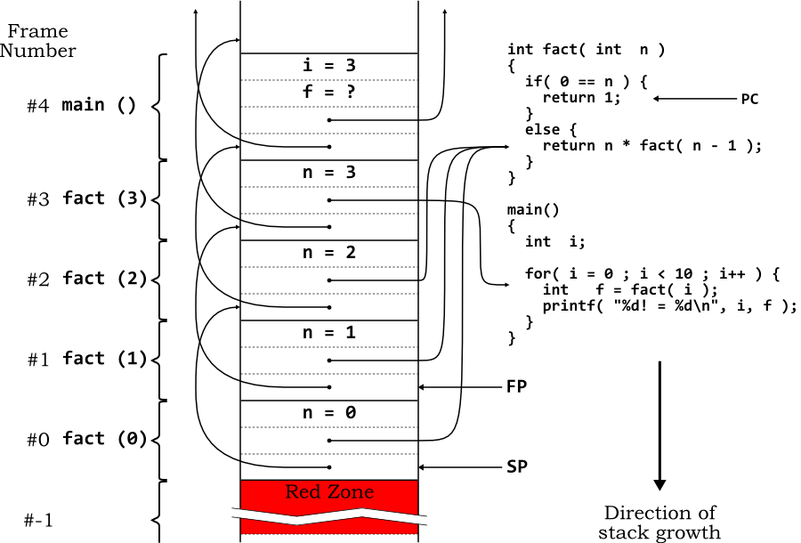

1. Summary
1.1. Requirements
Before diving into the internals, you should understand the formal requirements and other expectations for GDB. Although some of these may seem obvious, there have been proposals for GDB that have run counter to these requirements.
First of all, GDB is a debugger. It's not designed to be a front panel for embedded systems. It's not a text editor. It's not a shell. It's not a programming environment.
GDB is an interactive tool. Although a batch mode is available, GDB's primary role is to interact with a human programmer.
GDB should be responsive to the user. A programmer hot on the trail of a nasty bug, and operating under a looming deadline, is going to be very impatient of everything, including the response time to debugger commands.
GDB should be relatively permissive, such as for expressions. While the compiler should be picky (or have the option to be made picky), since source code lives for a long time usually, the programmer doing debugging shouldn't be spending time figuring out to mollify the debugger.
GDB will be called upon to deal with really large programs. Executable sizes of 50 to 100 megabytes occur regularly, and we've heard reports of programs approaching 1 gigabyte in size.
GDB should be able to run everywhere. No other debugger is available for even half as many configurations as GDB support
1.2. Contributors
The first edition of this document was written by John Gilmore of Cygnus Solutions. The current second edition was written by Stan Shebs of Cygnus Solutions, who continues to update the manual.
Over the years, many others have made additions and changes to this document. This section attempts to record the significant contributors to that effort. One of the virtues of free software is that everyone is free to contribute to it; with regret, we cannot actually acknowledge everyone here.
Plea: This section has only been added relatively recently (four years after publication of the second edition). Additions to this section are particularly welcome. If you or your friends (or enemies, to be evenhanded) have been unfairly omitted from this list, we would like to add your names!
A document such as this relies on being kept up to date by numerous small updates by contributing engineers as they make changes to the code base. The file ChangeLog in the GDB distribution approximates a blow–by–blow account. The most prolific contributors to this important, but low profile task are Andrew Cagney (responsible for over half the entries), Daniel Jacobowitz, Mark Kettenis, Jim Blandy and Eli Zaretskii.
Eli Zaretskii and Daniel Jacobowitz wrote the sections documenting watchpoints.
Jeremy Bennett updated the sections on initializing a new architecture and register representation, and added the section on Frame Interpretation.
2. Overall Structure
GDB consists of three major subsystems: user interface, symbol handling (the symbol side), and target system handling (the target side).
The user interface consists of several actual interfaces, plus supporting code.
The symbol side consists of object file readers , debugging info interpreters , symbol table management , source language expression parsing , type and value printing .
The target side consists of execution control , stack frame analysis , and physical target manipulation .
The target side/symbol side division is not formal, and there are a number of exceptions. For instance, core file support involves symbolic elements (the basic core file reader is in BFD) and target elements (it supplies the contents of memory and the values of registers). Instead, this division is useful for understanding how the minor subsystems should fit together.
2.1. The Symbol Side
The symbolic side of GDB can be thought of as "everything you can do in GDB without having a live program running". For instance, you can look at the types of variables, and evaluate many kinds of expressions.
2.2. The Target Side
The target side of GDB is the “bits and bytes manipulator”. Although it may make reference to symbolic info here and there, most of the target side will run with only a stripped executable available—or even no executable at all, in remote debugging cases.
Operations such as disassembly, stack frame crawls, and register display, are able to work with no symbolic info at all. In some cases, such as disassembly, GDB will use symbolic info to present addresses relative to symbols rather than as raw numbers, but it will work either way.
2.3. Configurations
Host refers to attributes of the system where GDB runs. Target refers to the system where the program being debugged executes. In most cases they are the same machine, in which case a third type of Native attributes come into play.
Defines and include files needed to build on the host are host support. Examples are tty support, system defined types, host byte order, host float format. These are all calculated by autoconf when the debugger is built.
Defines and information needed to handle the target format are target dependent. Examples are the stack frame format, instruction set, breakpoint instruction, registers, and how to set up and tear down the stack to call a function.
Information that is only needed when the host and target are the same, is native dependent. One example is Unix child process support; if the host and target are not the same, calling fork to start the target process is a bad idea. The various macros needed for finding the registers in the upage, running ptrace, and such are all in the native–dependent files.
Another example of native–dependent code is support for features that are really part of the target environment, but which require #include files that are only available on the host system. Core file handling and setjmp handling are two common cases.
When you want to make GDB work as the traditional native debugger on a system, you will need to supply both target and native information.
2.4. Source Tree Structure
The GDB source directory has a mostly flat structure—there are only a few subdirectories. A file’s name usually gives a hint as to what it does; for example, stabsread.c reads stabs, dwarf2read.c reads DWARF 2 (and later), etc. Files that are related to some common task have names that share common substrings. For example, *–thread.c files deal with debugging threads on various platforms; *read.c files deal with reading various kinds of symbol and object files; inf*.c files deal with direct control of the inferior program (GDB parlance for the program being debugged).
There are several dozens of files in the *–tdep.c family. tdep (historically) stands for target–dependent code—each of these files implements debug support for a specific target architecture (SPARC, MIPS, etc.). Usually, only one of these will be used in a specific GDB configuration (sometimes two, closely related). Since these files are used when you configure GDB as a cross debugger (e.g., a GDB that runs on x86 but is configured to debug ARM code), all code in these files is host–independent. E.g., including host–specific headers, assuming host endianness, etc. in these files would be incorrect.
Similarly, there are many *–nat.c files, each one for native debugging on a specific system (e.g., sparc–linux–nat.c is for native debugging of SPARC machines running the Linux kernel). These files typically interface with the host's native debug API, like for example ptrace or the /proc filesystem.
The few subdirectories of the source tree are:
- cli
- common
- compile
- gdbserver
- guile
- mi
- python
- testsuite
- tui
- unittests
Code that implements CLI, the GDB Command–Line Interpreter. See Command Interpreter.
Code shared between GDB and GDBServer.
Code that implements the compile command.
Code for the GDB remote server, GDBServer.
Code related to the Guile bindings.
The GDB/MI, the GDB Machine Interface interpreter.
Code related to the Python bindings.
The GDB regression testsuite, further sub–divided in directories for various features.
Code for TUI, the GDB Text–mode full–screen User Interface. See TUI.
Unit tests that can be written in a self–contained way accessing public interfaces. Typically these are unit tests exercising generic utility code. You'll also find unit tests scattered around source files in other directories, close to the code they're exercising. Grep for "namespace selftests" to find them. You can run the unit tests with the "maint selftest" command. Running the regression testsuite also runs the unit tests.
3. Algorithms
GDB uses a number of debugging–specific algorithms. They are often not very complicated, but get lost in the thicket of special cases and real–world issues. This chapter describes the basic algorithms and mentions some of the specific target definitions that they use.
3.1. Prologue Analysis
To produce a backtrace and allow the user to manipulate older frames’ variables and arguments, GDB needs to find the base addresses of older frames, and discover where those frames’ registers have been saved. Since a frame’s callee-saves registers get saved by younger frames if and when they’re reused, a frame’s registers may be scattered unpredictably across younger frames. This means that changing the value of a register–allocated variable in an older frame may actually entail writing to a save slot in some younger frame. @TAG(Register–save)
- Modern versions of GCC emit Dwarf call frame information ( CFI ), which describes how to find frame base addresses and saved registers. CFI
But CFI is not always available, so as a fallback GDB uses a technique called prologue analysis to find frame sizes and saved registers. A prologue analyzer disassembles the function’s machine code starting from its entry point, and looks for instructions that allocate frame space, save the stack pointer in a frame pointer register, save registers, and so on.
- Obviously, this can’t be done accurately in general, but it’s tractable to do well enough to be very helpful. Prologue analysis predates the GNU toolchain’s support for CFI; at one time, prologue analysis was the only mechanism GDB used for stack unwinding at all, when the function calling conventions didn’t specify a fixed frame layout. frame-unwind
In the olden days, function prologues were generated by hand–written, target–specific code in GCC, and treated as opaque and untouchable by optimizers. Looking at this code, it was usually straightforward to write a prologue analyzer for GDB that would accurately understand all the prologues GCC would generate. However, over time GCC became more aggressive about instruction scheduling, and began to understand more about the semantics of the prologue instructions themselves; in response, GDB’s analyzers became more complex and fragile. Keeping the prologue analyzers working as GCC (and the instruction sets themselves) evolved became a substantial task.
To try to address this problem, the code in prologue–value.h and prologue–value.c provides a general framework for writing prologue analyzers that are simpler and more robust than ad–hoc analyzers. When we analyze a prologue using the prologue–value framework, we’re really doing “abstract interpretation” or “pseudo–evaluation”: running the function’s code in simulation, but using conservative approximations of the values registers and memory would hold when the code actually runs. For example, if our function starts with the instruction:
addi r1, 42 # add 42 to r1we don’t know exactly what value will be in r1 after executing this instruction, but we do know it’ll be 42 greater than its original value.
If we then see an instruction like:
addi r1, 22 # add 22 to r1we still don’t know what r1's value is, but again, we can say it is now 64 greater than its original value.
If the next instruction were:
mov r2, r1 # set r2 to r1's valuethen we can say that r2's value is now the original value of r1 plus 64.
It’s common for prologues to save registers on the stack, so we’ll need to track the values of stack frame slots, as well as the registers. So after an instruction like this:
mov (fp+4), r2then we’d know that the stack slot four bytes above the frame pointer holds the original value of r1 plus 64.
And so on.
Of course, this can only go so far before it gets unreasonable. If we wanted to be able to say anything about the value of r1 after the instruction:
xor r1, r3 # exclusive-or r1 and r3, place result in r1then things would get pretty complex. But remember, we’re just doing a conservative approximation; if exclusive–or instructions aren’t relevant to prologues, we can just say r1’s value is now “unknown”. We can ignore things that are too complex, if that loss of information is acceptable for our application.
So when we say “conservative approximation” here, what we mean is an approximation that is either accurate, or marked “unknown”, but never inaccurate.
Using this framework, a prologue analyzer is simply an interpreter for machine code , but one that uses conservative approximations for the contents of registers and memory instead of actual values. Starting from the function’s entry point, you simulate instructions up to the current PC, or an instruction that you don’t know how to simulate. Now you can examine the state of the registers and stack slots you’ve kept track of.
- To see how large your stack frame is, just check the value of the stack pointer register; if it’s the original value of the SP minus a constant, then that constant is the stack frame’s size. If the SP’s value has been marked as “unknown”, then that means the prologue has done something too complex for us to track, and we don’t know the frame size.
- To see where we’ve saved the previous frame’s registers, we just search the values we’ve tracked — stack slots, usually, but registers, too, if you want — for something equal to the register’s original value. If the calling conventions suggest a standard place to save a given register, then we can check there first, but really, anything that will get us back the original value will probably work.
This does take some work. But prologue analyzers aren’t quick–and–simple pattern patching to recognize a few fixed prologue forms any more; they’re big, hairy functions. Along with inferior function calls, prologue analysis accounts for a substantial portion of the time needed to stabilize a GDB port. So it’s worthwhile to look for an approach that will be easier to understand and maintain. In the approach described above:
- It’s easier to see that the analyzer is correct: you just see whether the analyzer properly (albeit conservatively) simulates the effect of each instruction.
- It’s easier to extend the analyzer: you can add support for new instructions, and know that you haven’t broken anything that wasn’t already broken before.
- It’s orthogonal: to gather new information, you don’t need to complicate the code for each instruction. As long as your domain of conservative values is already detailed enough to tell you what you need, then all the existing instruction simulations are already gathering the right data for you.
The file prologue–value.h contains detailed comments explaining the framework and how to use it.
3.2. Breakpoint Handling
In general, a breakpoint is a user–designated location in the program where the user wants to regain control if program execution ever reaches that location.
There are two main ways to implement breakpoints; either as hardware breakpoints or as software breakpoints .
- Hardware breakpoints Hardware-Breakpoint
- Hardware breakpoints are sometimes available as a built–in debugging features with some chips. Typically these work by having dedicated register into which the breakpoint address may be stored. If the PC (shorthand for program counter) ever matches a value in a breakpoint registers, the CPU raises an exception and reports it to GDB.
- Another possibility is when an emulator is in use; many emulators include circuitry that watches the address lines coming out from the processor, and force it to stop if the address matches a breakpoint’s address.
- A third possibility is that the target already has the ability to do breakpoints somehow; for instance, a ROM monitor may do its own software breakpoints. So although these are not literally “hardware breakpoints”, from GDB’s point of view they work the same; GDB need not do anything more than set the breakpoint and wait for something to happen.
- Software breakpoints Software-Breakpoint
- Software breakpoints require GDB to do somewhat more work. The basic theory is that GDB will replace a program instruction with a trap, illegal divide, or some other instruction that will cause an exception, and then when it’s encountered, GDB will take the exception and stop the program. When the user says to continue, GDB will restore the original instruction, single–step, re–insert the trap, and continue on.
- Note that this is only true in gdb–all–stop mode, where all threads are explicitely stopped by GDB whenever any of them hits a breakpoint. In gdb–non–stop mode, removing the trap even for a short time would open a window of time for other threads to miss the breakpoint. This is covered in the chapter about single–stepping. gdb-non-stop
Since they depend on hardware resources, hardware breakpoints may be limited in number; when the user asks for more, GDB will start trying to set software breakpoints. (On some architectures, notably the 32–bit x86 platforms, GDB cannot always know whether there’s enough hardware resources to insert all the hardware breakpoints and watchpoints. On those platforms, GDB prints an error message only when the program being debugged is continued.)
Since it literally overwrites the program being tested, the program area must be writable, so this technique won’t work on programs in ROM. It can also distort the behavior of programs that examine themselves, although such a situation would be highly unusual.
Also, the software breakpoint instruction should be the smallest size of instruction, so it doesn’t overwrite an instruction that might be a jump target, and cause disaster when the program jumps into the middle of the breakpoint instruction. (Strictly speaking, the breakpoint must be no larger than the smallest interval between instructions that may be jump targets; perhaps there is an architecture where only even–numbered instructions may jumped to.) Note that it’s possible for an instruction set not to have any instructions usable for a software breakpoint, although in practice only the ARC has failed to define such an instruction.
Basic breakpoint object handling is in breakpoint.c . However, much of the interesting breakpoint action is in infrun.c .
target_remove_breakpoint (bp_tgt)
target_insert_breakpoint (bp_tgt)Insert or remove a software breakpoint at address bp_tgt–>placed_address. Returns zero for success, non–zero for failure. On input, bp_tgt contains the address of the breakpoint, and is otherwise initialized to zero. The fields of the struct bp_target_info pointed to by bp_tgt are updated to contain other information about the breakpoint on output. The field placed_address may be updated if the breakpoint was placed at a related address; the field shadow_contents contains the real contents of the bytes where the breakpoint has been inserted, if reading memory would return the breakpoint instead of the underlying memory; the field shadow_len is the length of memory cached in shadow_contents, if any; and the field placed_size is optionally set and used by the target, if it could differ from shadow_len.
For example, the remote target ‘Z0’ packet does not require shadowing memory, so shadow_len is left at zero. However, the length reported by gdbarch_breakpoint_from_pc is cached in placed_size, so that a matching ‘z0’ packet can be used to remove the breakpoint.
target_remove_hw_breakpoint (bp_tgt)
target_insert_hw_breakpoint (bp_tgt)Insert or remove a hardware–assisted breakpoint at address bp_tgt–>placed_address. Returns zero for success, non–zero for failure. See target_insert_breakpoint for a description of the struct bp_target_info pointed to by bp_tgt; the shadow_contents and shadow_len members are not used for hardware breakpoints, but placed_size may be.
3.3. Stepping over runtime loader dynamic symbol resolution code
If the program uses ELF–style shared libraries, then calls to functions in shared libraries go through stubs, which live in a table called the PLT (Procedure Linkage Table). The first time the function is called, the stub sends control to the dynamic linker, which looks up the function’s real address, patches the stub so that future calls will go directly to the function, and then passes control to the function.
If we are stepping at the source level, we don’t want to see any of this — we just want to skip over the stub and the dynamic linker. The simple approach is to single–step until control leaves the dynamic linker.
However, on some systems (e.g., Red Hat’s 5.2 distribution) the dynamic linker calls functions in the shared C library, so you can’t tell from the PC alone whether the dynamic linker is still running. In this case, we use a step–resume breakpoint to get us past the dynamic linker, as if we were using next to step over a function call.
The in_solib_dynsym_resolve_code function says whether we’re in the dynamic linker code or not. Normally, this means we single–step. However, if gdbarch_skip_solib_resolver then returns non–zero, then its value is an address where we can place a step–resume breakpoint to get past the linker’s symbol resolution function.
The in_dynsym_resolve_code hook of the target_so_ops vector can generally be implemented in a pretty portable way, by comparing the PC against the address ranges of the dynamic linker’s sections.
The gdbarch_skip_solib_resolver implementation is generally going to be system–specific, since it depends on internal details of the dynamic linker. It’s usually not too hard to figure out where to put a breakpoint, but it certainly isn’t portable. gdbarch_skip_solib_resolver should do plenty of sanity checking. If it can’t figure things out, returning zero and getting the (possibly confusing) stepping behavior is better than signaling an error, which will obscure the change in the inferior’s state. */
3.4. longjmp Support
GDB has support for figuring out that the target is doing a longjmp and for stopping at the target of the jump, if we are stepping. This is done with a few specialized internal breakpoints, which are visible in the output of the maint info breakpoint command.
To make this work, you need to define a function called gdbarch_get_longjmp_target, which will examine the jmp_buf structure and extract the longjmp target address. Since jmp_buf is target specific and typically defined in a target header not available to GDB, you will need to determine the offset of the PC manually and return that; many targets define a jb_pc_offset field in the tdep structure to save the value once calculated.
3.5. Watchpoints
Watchpoints are a special kind of breakpoints (see breakpoints) which break when data is accessed rather than when some instruction is executed. When you have data which changes without your knowing what code does that, watchpoints are the silver bullet to hunt down and kill such bugs.
Watchpoints can be either hardware–assisted or not; the latter type is known as “software watchpoints.” GDB always uses hardware–assisted watchpoints if they are available, and falls back on software watchpoints otherwise. Typical situations where GDB will use software watchpoints are:
- The watched memory region is too large for the underlying hardware watchpoint support. For example, each x86 debug register can watch up to 4 bytes of memory, so trying to watch data structures whose size is more than 16 bytes will cause GDB to use software watchpoints.
- The value of the expression to be watched depends on data held in registers (as opposed to memory).
- Too many different watchpoints requested. (On some architectures, this situation is impossible to detect until the debugged program is resumed.) Note that x86 debug registers are used both for hardware breakpoints and for watchpoints, so setting too many hardware breakpoints might cause watchpoint insertion to fail.
- No hardware–assisted watchpoints provided by the target implementation.
Software watchpoints are very slow, since GDB needs to single–step the program being debugged and test the value of the watched expression(s) after each instruction. The rest of this section is mostly irrelevant for software watchpoints.
When the inferior stops, GDB tries to establish, among other possible reasons, whether it stopped due to a watchpoint being hit. It first uses STOPPED_BY_WATCHPOINT to see if any watchpoint was hit. If not, all watchpoint checking is skipped.
Then GDB calls target_stopped_data_address exactly once. This method returns the address of the watchpoint which triggered, if the target can determine it. If the triggered address is available, GDB compares the address returned by this method with each watched memory address in each active watchpoint. For data–read and data–access watchpoints, GDB announces every watchpoint that watches the triggered address as being hit. For this reason, data–read and data–access watchpoints require that the triggered address be available; if not, read and access watchpoints will never be considered hit. For data–write watchpoints, if the triggered address is available, GDB considers only those watchpoints which match that address; otherwise, GDB considers all data–write watchpoints. For each data–write watchpoint that GDB considers, it evaluates the expression whose value is being watched, and tests whether the watched value has changed. Watchpoints whose watched values have changed are announced as hit.
GDB uses several macros and primitives to support hardware watchpoints:
TARGET_CAN_USE_HARDWARE_WATCHPOINT (''type'', ''count'', ''other'')Return the number of hardware watchpoints of type type that are possible to be set. The value is positive if count watchpoints of this type can be set, zero if setting watchpoints of this type is not supported, and negative if count is more than the maximum number of watchpoints of type type that can be set. other is non–zero if other types of watchpoints are currently enabled (there are architectures which cannot set watchpoints of different types at the same time).
TARGET_REGION_OK_FOR_HW_WATCHPOINT (''addr'', ''len'')Return non–zero if hardware watchpoints can be used to watch a region whose address is addr and whose length in bytes is len.
target_insert_watchpoint (''addr'', ''len'', ''type'') target_remove_watchpoint (''addr'', ''len'', ''type'')Insert or remove a hardware watchpoint starting at addr, for len bytes. type is the watchpoint type, one of the possible values of the enumerated data type target_hw_bp_type, defined by breakpoint.h as follows:
enum target_hw_bp_type
{
hw_write = 0, /* Common (write) HW watchpoint */
hw_read = 1, /* Read HW watchpoint */
hw_access = 2, /* Access (read or write) HW watchpoint */
hw_execute = 3 /* Execute HW breakpoint */
};These two macros should return 0 for success, non–zero for failure.
target_stopped_data_address (''addr_p'')If the inferior has some watchpoint that triggered, place the address associated with the watchpoint at the location pointed to by addr_p and return non–zero. Otherwise, return zero. This is required for data–read and data–access watchpoints. It is not required for data–write watchpoints, but GDB uses it to improve handling of those also.
GDB will only call this method once per watchpoint stop, immediately after calling STOPPED_BY_WATCHPOINT. If the target’s watchpoint indication is sticky, i.e., stays set after resuming, this method should clear it. For instance, the x86 debug control register has sticky triggered flags.
target_watchpoint_addr_within_range (''target'', ''addr'', ''start'', ''length'')Check whether addr (as returned by target_stopped_data_address) lies within the hardware–defined watchpoint region described by start and length. This only needs to be provided if the granularity of a watchpoint is greater than one byte, i.e., if the watchpoint can also trigger on nearby addresses outside of the watched region.
HAVE_STEPPABLE_WATCHPOINTIf defined to a non–zero value, it is not necessary to disable a watchpoint to step over it. Like gdbarch_have_nonsteppable_watchpoint, this is usually set when watchpoints trigger at the instruction which will perform an interesting read or write. It should be set if there is a temporary disable bit which allows the processor to step over the interesting instruction without raising the watchpoint exception again.
int gdbarch_have_nonsteppable_watchpoint (''gdbarch'')If it returns a non–zero value, GDB should disable a watchpoint to step the inferior over it. This is usually set when watchpoints trigger at the instruction which will perform an interesting read or write.
HAVE_CONTINUABLE_WATCHPOINTIf defined to a non–zero value, it is possible to continue the inferior after a watchpoint has been hit. This is usually set when watchpoints trigger at the instruction following an interesting read or write.
STOPPED_BY_WATCHPOINT (''wait_status'')Return non–zero if stopped by a watchpoint. wait_status is of the type struct target_waitstatus, defined by target.h. Normally, this macro is defined to invoke the function pointed to by the to_stopped_by_watchpoint member of the structure (of the type target_ops, defined on target.h) that describes the target–specific operations; to_stopped_by_watchpoint ignores the wait_status argument.
GDB does not require the non–zero value returned by STOPPED_BY_WATCHPOINT to be 100% correct, so if a target cannot determine for sure whether the inferior stopped due to a watchpoint, it could return non–zero “just in case”. [Watchpoints–and–Threads ]
3.5.1. Watchpoints and Threads
GDB only supports process–wide watchpoints, which trigger in all threads. GDB uses the thread ID to make watchpoints act as if they were thread–specific, but it cannot set hardware watchpoints that only trigger in a specific thread. Therefore, even if the target supports threads, per–thread debug registers, and watchpoints which only affect a single thread, it should set the per–thread debug registers for all threads to the same value. On GNU/Linux native targets, this is accomplished by using ALL_LWPS in target_insert_watchpoint and target_remove_watchpoint and by using linux_set_new_thread to register a handler for newly created threads.
GDB’s GNU/Linux support only reports a single event at a time, although multiple events can trigger simultaneously for multi–threaded programs. When multiple events occur, linux–nat.c queues subsequent events and returns them the next time the program is resumed. This means that STOPPED_BY_WATCHPOINT and target_stopped_data_address only need to consult the current thread’s state—the thread indicated by inferior_ptid. If two threads have hit watchpoints simultaneously, those routines will be called a second time for the second thread. [x86–Watchpoints ]
3.5.2. x86 Watchpoints
The 32–bit Intel x86 (a.k.a. ia32) processors feature special debug registers designed to facilitate debugging. GDB provides a generic library of functions that x86–based ports can use to implement support for watchpoints and hardware–assisted breakpoints. This subsection documents the x86 watchpoint facilities in GDB.
(At present, the library functions read and write debug registers directly, and are thus only available for native configurations.)
To use the generic x86 watchpoint support, a port should do the following:
- Define the macro I386_USE_GENERIC_WATCHPOINTS somewhere in the target–dependent headers.
- Include the config/i386/nm–i386.h header file after defining I386_USE_GENERIC_WATCHPOINTS.
- Add i386–nat.o to the value of the Make variable NATDEPFILES (see NATDEPFILES).
- Provide implementations for the I386_DR_LOW_* macros described below. Typically, each macro should call a target–specific function which does the real work.
The x86 watchpoint support works by maintaining mirror images of the debug registers. Values are copied between the mirror images and the real debug registers via a set of macros which each target needs to provide:
I386_DR_LOW_SET_CONTROL (''val'')Set the Debug Control (DR7) register to the value val.
I386_DR_LOW_SET_ADDR (''idx'', ''addr'')Put the address addr into the debug register number idx.
I386_DR_LOW_RESET_ADDR (''idx'')Reset (i.e. zero out) the address stored in the debug register number idx.
I386_DR_LOW_GET_STATUSReturn the value of the Debug Status (DR6) register. This value is used immediately after it is returned by I386_DR_LOW_GET_STATUS, so as to support per–thread status register values.
For each one of the 4 debug registers (whose indices are from 0 to 3) that store addresses, a reference count is maintained by GDB, to allow sharing of debug registers by several watchpoints. This allows users to define several watchpoints that watch the same expression, but with different conditions and/or commands, without wasting debug registers which are in short supply. GDB maintains the reference counts internally, targets don’t have to do anything to use this feature.
The x86 debug registers can each watch a region that is 1, 2, or 4 bytes long. The ia32 architecture requires that each watched region be appropriately aligned: 2–byte region on 2–byte boundary, 4–byte region on 4–byte boundary. However, the x86 watchpoint support in GDB can watch unaligned regions and regions larger than 4 bytes (up to 16 bytes) by allocating several debug registers to watch a single region. This allocation of several registers per a watched region is also done automatically without target code intervention.
The generic x86 watchpoint support provides the following API for the GDB’s application code:
i386_region_ok_for_watchpoint (''addr'', ''len'')The macro TARGET_REGION_OK_FOR_HW_WATCHPOINT is set to call this function. It counts the number of debug registers required to watch a given region, and returns a non–zero value if that number is less than 4, the number of debug registers available to x86 processors.
i386_stopped_data_address (''addr_p'')The target function target_stopped_data_address is set to call this function. This function examines the breakpoint condition bits in the DR6 Debug Status register, as returned by the I386_DR_LOW_GET_STATUS macro, and returns the address associated with the first bit that is set in DR6.
i386_stopped_by_watchpoint (void)The macro STOPPED_BY_WATCHPOINT is set to call this function. The argument passed to STOPPED_BY_WATCHPOINT is ignored. This function examines the breakpoint condition bits in the DR6 Debug Status register, as returned by the I386_DR_LOW_GET_STATUS macro, and returns true if any bit is set. Otherwise, false is returned.
i386_insert_watchpoint (''addr'', ''len'', ''type'') i386_remove_watchpoint (''addr'', ''len'', ''type'')Insert or remove a watchpoint. The macros target_insert_watchpoint and target_remove_watchpoint are set to call these functions. i386_insert_watchpoint first looks for a debug register which is already set to watch the same region for the same access types; if found, it just increments the reference count of that debug register, thus implementing debug register sharing between watchpoints. If no such register is found, the function looks for a vacant debug register, sets its mirrored value to addr, sets the mirrored value of DR7 Debug Control register as appropriate for the len and type parameters, and then passes the new values of the debug register and DR7 to the inferior by calling I386_DR_LOW_SET_ADDR and I386_DR_LOW_SET_CONTROL. If more than one debug register is required to cover the given region, the above process is repeated for each debug register.
i386_remove_watchpoint does the opposite: it resets the address in the mirrored value of the debug register and its read/write and length bits in the mirrored value of DR7, then passes these new values to the inferior via I386_DR_LOW_RESET_ADDR and I386_DR_LOW_SET_CONTROL. If a register is shared by several watchpoints, each time a i386_remove_watchpoint is called, it decrements the reference count, and only calls I386_DR_LOW_RESET_ADDR and I386_DR_LOW_SET_CONTROL when the count goes to zero.
i386_insert_hw_breakpoint (''bp_tgt'') i386_remove_hw_breakpoint (''bp_tgt'')These functions insert and remove hardware–assisted breakpoints. The macros target_insert_hw_breakpoint and target_remove_hw_breakpoint are set to call these functions. The argument is a struct bp_target_info *, as described in the documentation for target_insert_breakpoint. These functions work like i386_insert_watchpoint and i386_remove_watchpoint, respectively, except that they set up the debug registers to watch instruction execution, and each hardware–assisted breakpoint always requires exactly one debug register.
i386_cleanup_dregs (void)This function clears all the reference counts, addresses, and control bits in the mirror images of the debug registers. It doesn’t affect the actual debug registers in the inferior process.
Notes:
- x86 processors support setting watchpoints on I/O reads or writes. However, since no target supports this (as of March 2001), and since enum target_hw_bp_type doesn’t even have an enumeration for I/O watchpoints, this feature is not yet available to GDB running on x86.
- x86 processors can enable watchpoints locally, for the current task only, or globally, for all the tasks. For each debug register, there’s a bit in the DR7 Debug Control register that determines whether the associated address is watched locally or globally. The current implementation of x86 watchpoint support in GDB always sets watchpoints to be locally enabled, since global watchpoints might interfere with the underlying OS and are probably unavailable in many platforms.
3.6. Checkpoints
In the abstract, a checkpoint is a point in the execution history of the program, which the user may wish to return to at some later time.
Internally, a checkpoint is a saved copy of the program state, including whatever information is required in order to restore the program to that state at a later time. This can be expected to include the state of registers and memory, and may include external state such as the state of open files and devices.
There are a number of ways in which checkpoints may be implemented in gdb, e.g. as corefiles, as forked processes, and as some opaque method implemented on the target side.
A corefile can be used to save an image of target memory and register state, which can in principle be restored later — but corefiles do not typically include information about external entities such as open files. Currently this method is not implemented in gdb.
A forked process can save the state of user memory and registers, as well as some subset of external (kernel) state. This method is used to implement checkpoints on Linux, and in principle might be used on other systems.
Some targets, e.g. simulators, might have their own built–in method for saving checkpoints, and gdb might be able to take advantage of that capability without necessarily knowing any details of how it is done.
3.7. Observing changes in GDB internals
In order to function properly, several modules need to be notified when some changes occur in the GDB internals. Traditionally, these modules have relied on several paradigms, the most common ones being hooks and gdb–events. Unfortunately, none of these paradigms was versatile enough to become the standard notification mechanism in GDB. The fact that they only supported one “client” was also a strong limitation.
A new paradigm, based on the Observer pattern of the Design Patterns book, has therefore been implemented. The goal was to provide a new interface overcoming the issues with the notification mechanisms previously available. This new interface needed to be strongly typed, easy to extend, and versatile enough to be used as the standard interface when adding new notifications.
See GDB Observers for a brief description of the observers currently implemented in GDB. The rationale for the current implementation is also briefly discussed.
4. User Interface
GDB has several user interfaces, of which the traditional command–line interface is perhaps the most familiar.
4.1. Command Interpreter
The command interpreter in GDB is fairly simple. It is designed to allow for the set of commands to be augmented dynamically, and also has a recursive subcommand capability, where the first argument to a command may itself direct a lookup on a different command list.
For instance, the ‘set’ command just starts a lookup on the setlist command list, while ‘set thread’ recurses to the set_thread_cmd_list.
To add commands in general, use add_cmd. add_com adds to the main command list, and should be used for those commands. The usual place to add commands is in the _initialize_''xyz'' routines at the ends of most source files.
To add paired ‘set’ and ‘show’ commands, use add_setshow_cmd or add_setshow_cmd_full. The former is a slightly simpler interface which is useful when you don’t need to further modify the new command structures, while the latter returns the new command structures for manipulation.
Before removing commands from the command set it is a good idea to deprecate them for some time. Use deprecate_cmd on commands or aliases to set the deprecated flag. deprecate_cmd takes a struct cmd_list_element as it’s first argument. You can use the return value from add_com or add_cmd to deprecate the command immediately after it is created.
The first time a command is used the user will be warned and offered a replacement (if one exists). Note that the replacement string passed to deprecate_cmd should be the full name of the command, i.e., the entire string the user should type at the command line. [UI_002dIndependent–Output ]
4.2. UI–Independent Output;the ui_out Functions
The ui_out functions present an abstraction level for the GDB output code. They hide the specifics of different user interfaces supported by GDB, and thus free the programmer from the need to write several versions of the same code, one each for every UI, to produce output. [Overview–and–Terminology ]
4.2.1. Overview and Terminology
In general, execution of each GDB command produces some sort of output, and can even generate an input request.
Output can be generated for the following purposes:
- to display a result of an operation;
- to convey info or produce side–effects of a requested operation;
- to provide a notification of an asynchronous event (including progress indication of a prolonged asynchronous operation);
- to display error messages (including warnings);
- to show debug data;
- to query or prompt a user for input (a special case).
This section mainly concentrates on how to build result output, although some of it also applies to other kinds of output.
Generation of output that displays the results of an operation involves one or more of the following:
- output of the actual data
- formatting the output as appropriate for console output, to make it easily readable by humans
- machine oriented formatting–a more terse formatting to allow for easy parsing by programs which read GDB’s output
- annotation, whose purpose is to help legacy GUIs to identify interesting parts in the output
The ui_out routines take care of the first three aspects. Annotations are provided by separate annotation routines. Note that use of annotations for an interface between a GUI and GDB is deprecated.
Output can be in the form of a single item, which we call a field; a list consisting of identical fields; a tuple consisting of non–identical fields; or a table, which is a tuple consisting of a header and a body. In a BNF–like form:
<table> →
<header> <body>
<header> →
{ <column> }
<column> →
<width> <alignment> <title>
<body> →
{<row>} [General-Conventions ]4.2.2. General Conventions
Most ui_out routines are of type void, the exceptions are ui_out_stream_new (which returns a pointer to the newly created object) and the make_cleanup routines.
The first parameter is always the ui_out vector object, a pointer to a struct ui_out.
The format parameter is like in printf family of functions. When it is present, there must also be a variable list of arguments sufficient used to satisfy the % specifiers in the supplied format.
When a character string argument is not used in a ui_out function call, a NULL pointer has to be supplied instead. [Table_002c–Tuple–and–List–Functions ]
4.2.3. Table, Tuple and List Functions
This section introduces ui_out routines for building lists, tuples and tables. The routines to output the actual data items (fields) are presented in the next section.
To recap: A tuple is a sequence of fields, each field containing information about an object; a list is a sequence of fields where each field describes an identical object.
Use the table functions when your output consists of a list of rows (tuples) and the console output should include a heading. Use this even when you are listing just one object but you still want the header.
Tables can not be nested. Tuples and lists can be nested up to a maximum of five levels.
The overall structure of the table output code is something like this:
ui_out_table_begin
ui_out_table_header
…
ui_out_table_body
ui_out_tuple_begin
ui_out_field_*
…
ui_out_tuple_end
…
ui_out_table_endHere is the description of table–, tuple– and list–related ui_out functions:
4.2.4. Function: ''void'' ui_out_table_begin ''(struct ui_out *''uiout'', int ''nbrofcols'', int ''nr_rows'', const char *''tblid'')''
The function ui_out_table_begin marks the beginning of the output of a table. It should always be called before any other ui_out function for a given table. nbrofcols is the number of columns in the table. nr_rows is the number of rows in the table. tblid is an optional string identifying the table. The string pointed to by tblid is copied by the implementation of ui_out_table_begin, so the application can free the string if it was malloced.
The companion function ui_out_table_end, described below, marks the end of the table’s output.
4.2.5. Function: ''void'' ui_out_table_header ''(struct ui_out *''uiout'', int ''width'', enum ui_align ''alignment'', const char *''colhdr'')''
ui_out_table_header provides the header information for a single table column. You call this function several times, one each for every column of the table, after ui_out_table_begin, but before ui_out_table_body.
The value of width gives the column width in characters. The value of alignment is one of left, center, and right, and it specifies how to align the header: left–justify, center, or right–justify it. colhdr points to a string that specifies the column header; the implementation copies that string, so column header strings in malloced storage can be freed after the call.
4.2.6. Function: ''void'' ui_out_table_body ''(struct ui_out *''uiout'')''
This function delimits the table header from the table body.
4.2.7. Function: ''void'' ui_out_table_end ''(struct ui_out *''uiout'')''
This function signals the end of a table’s output. It should be called after the table body has been produced by the list and field output functions.
There should be exactly one call to ui_out_table_end for each call to ui_out_table_begin, otherwise the ui_out functions will signal an internal error.
The output of the tuples that represent the table rows must follow the call to ui_out_table_body and precede the call to ui_out_table_end. You build a tuple by calling ui_out_tuple_begin and ui_out_tuple_end, with suitable calls to functions which actually output fields between them.
4.2.8. Function: ''void'' ui_out_tuple_begin ''(struct ui_out *''uiout'', const char *''id'')''
This function marks the beginning of a tuple output. id points to an optional string that identifies the tuple; it is copied by the implementation, and so strings in malloced storage can be freed after the call.
4.2.9. Function: ''void'' ui_out_tuple_end ''(struct ui_out *''uiout'')''
This function signals an end of a tuple output. There should be exactly one call to ui_out_tuple_end for each call to ui_out_tuple_begin, otherwise an internal GDB error will be signaled.
4.2.10. Function: ''struct cleanup *'' make_cleanup_ui_out_tuple_begin_end ''(struct ui_out *''uiout'', const char *''id'')''
This function first opens the tuple and then establishes a cleanup (see Cleanups) to close the tuple. It provides a convenient and correct implementation of the non–portable [DOCF1 1] code sequence:
struct cleanup *old_cleanup;
ui_out_tuple_begin (uiout, "...");
old_cleanup = make_cleanup ((void(*)(void *)) ui_out_tuple_end,
uiout);4.2.11. Function: ''void'' ui_out_list_begin ''(struct ui_out *''uiout'', const char *''id'')''
This function marks the beginning of a list output. id points to an optional string that identifies the list; it is copied by the implementation, and so strings in malloced storage can be freed after the call.
4.2.12. Function: ''void'' ui_out_list_end ''(struct ui_out *''uiout'')''
This function signals an end of a list output. There should be exactly one call to ui_out_list_end for each call to ui_out_list_begin, otherwise an internal GDB error will be signaled.
4.2.13. Function: ''struct cleanup *'' make_cleanup_ui_out_list_begin_end ''(struct ui_out *''uiout'', const char *''id'')''
Similar to make_cleanup_ui_out_tuple_begin_end, this function opens a list and then establishes cleanup (see Cleanups) that will close the list. [Item–Output–Functions ]
Item Output Functions
The functions described below produce output for the actual data items, or fields, which contain information about the object.
Choose the appropriate function accordingly to your particular needs.
4.2.14. Function: ''void'' ui_out_field_fmt ''(struct ui_out *''uiout'', char *''fldname'', char *''format'', ...)''
This is the most general output function. It produces the representation of the data in the variable–length argument list according to formatting specifications in format, a printf–like format string. The optional argument fldname supplies the name of the field. The data items themselves are supplied as additional arguments after format.
This generic function should be used only when it is not possible to use one of the specialized versions (see below).
4.2.15. Function: ''void'' ui_out_field_int ''(struct ui_out *''uiout'', const char *''fldname'', int ''value'')''
This function outputs a value of an int variable. It uses the "%d" output conversion specification. fldname specifies the name of the field.
4.2.16. Function: ''void'' ui_out_field_fmt_int ''(struct ui_out *''uiout'', int ''width'', enum ui_align ''alignment'', const char *''fldname'', int ''value'')''
This function outputs a value of an int variable. It differs from ui_out_field_int in that the caller specifies the desired width and alignment of the output. fldname specifies the name of the field.
4.2.17. Function: ''void'' ui_out_field_core_addr ''(struct ui_out *''uiout'', const char *''fldname'', struct gdbarch *''gdbarch'', CORE_ADDR ''address'')''
This function outputs an address as appropriate for gdbarch.
4.2.18. Function: ''void'' ui_out_field_string ''(struct ui_out *''uiout'', const char *''fldname'', const char *''string'')''
This function outputs a string using the "%s" conversion specification.
Sometimes, there’s a need to compose your output piece by piece using functions that operate on a stream, such as value_print or fprintf_symbol_filtered. These functions accept an argument of the type struct ui_file *, a pointer to a ui_file object used to store the data stream used for the output. When you use one of these functions, you need a way to pass their results stored in a ui_file object to the ui_out functions. To this end, you first create a ui_stream object by calling ui_out_stream_new, pass the stream member of that ui_stream object to value_print and similar functions, and finally call ui_out_field_stream to output the field you constructed. When the ui_stream object is no longer needed, you should destroy it and free its memory by calling ui_out_stream_delete.
4.2.19. Function: ''struct ui_stream *'' ui_out_stream_new ''(struct ui_out *''uiout'')''
This function creates a new ui_stream object which uses the same output methods as the ui_out object whose pointer is passed in uiout. It returns a pointer to the newly created ui_stream object.
4.2.20. Function: ''void'' ui_out_stream_delete ''(struct ui_stream *''streambuf'')''
This functions destroys a ui_stream object specified by streambuf.
4.2.21. Function: ''void'' ui_out_field_stream ''(struct ui_out *''uiout'', const char *''fieldname'', struct ui_stream *''streambuf'')''
This function consumes all the data accumulated in streambuf–>stream and outputs it like ui_out_field_string does. After a call to ui_out_field_stream, the accumulated data no longer exists, but the stream is still valid and may be used for producing more fields.
Important: If there is any chance that your code could bail out before completing output generation and reaching the point where ui_out_stream_delete is called, it is necessary to set up a cleanup, to avoid leaking memory and other resources. Here’s a skeleton code to do that:
struct ui_stream *mybuf = ui_out_stream_new (uiout);
struct cleanup *old = make_cleanup (ui_out_stream_delete, mybuf);
...
do_cleanups (old);If the function already has the old cleanup chain set (for other kinds of cleanups), you just have to add your cleanup to it:
mybuf = ui_out_stream_new (uiout);
make_cleanup (ui_out_stream_delete, mybuf);Note that with cleanups in place, you should not call ui_out_stream_delete directly, or you would attempt to free the same buffer twice. [Utility–Output–Functions ]
Utility Output Functions
4.2.22. Function: ''void'' ui_out_field_skip ''(struct ui_out *''uiout'', const char *''fldname'')''
This function skips a field in a table. Use it if you have to leave an empty field without disrupting the table alignment. The argument fldname specifies a name for the (missing) filed.
4.2.23. Function: ''void'' ui_out_text ''(struct ui_out *''uiout'', const char *''string'')''
This function outputs the text in string in a way that makes it easy to be read by humans. For example, the console implementation of this method filters the text through a built–in pager, to prevent it from scrolling off the visible portion of the screen.
Use this function for printing relatively long chunks of text around the actual field data: the text it produces is not aligned according to the table’s format. Use ui_out_field_string to output a string field, and use ui_out_message, described below, to output short messages.
4.2.24. Function: ''void'' ui_out_spaces ''(struct ui_out *''uiout'', int ''nspaces'')''
This function outputs nspaces spaces. It is handy to align the text produced by ui_out_text with the rest of the table or list.
4.2.25. Function: ''void'' ui_out_message ''(struct ui_out *''uiout'', int ''verbosity'', const char *''format'', ...)''
This function produces a formatted message, provided that the current verbosity level is at least as large as given by verbosity. The current verbosity level is specified by the user with the ‘set verbositylevel’ command. [DOCF2 2]
4.2.26. Function: ''void'' ui_out_wrap_hint ''(struct ui_out *''uiout'', char *''indent'')''
This function gives the console output filter (a paging filter) a hint of where to break lines which are too long. Ignored for all other output consumers. indent, if non–NULL, is the string to be printed to indent the wrapped text on the next line; it must remain accessible until the next call to ui_out_wrap_hint, or until an explicit newline is produced by one of the other functions. If indent is NULL, the wrapped text will not be indented.
4.2.27. Function: ''void'' ui_out_flush ''(struct ui_out *''uiout'')''
This function flushes whatever output has been accumulated so far, if the UI buffers output. [Examples–of–Use–of–ui_005fout–functions ]
Examples of Use of {ui_out} functions
This section gives some practical examples of using the ui_out functions to generalize the old console–oriented code in GDB. The examples all come from functions defined on the breakpoints.c file.
This example, from the breakpoint_1 function, shows how to produce a table.
The original code was:
if (!found_a_breakpoint++)
{
annotate_breakpoints_headers ();
annotate_field (0);
printf_filtered ("Num ");
annotate_field (1);
printf_filtered ("Type ");
annotate_field (2);
printf_filtered ("Disp ");
annotate_field (3);
printf_filtered ("Enb ");
if (addressprint)
{
annotate_field (4);
printf_filtered ("Address ");
}
annotate_field (5);
printf_filtered ("What\n");
annotate_breakpoints_table ();
}Here’s the new version:
nr_printable_breakpoints = …;
if (addressprint)
ui_out_table_begin (ui, 6, nr_printable_breakpoints, "BreakpointTable");
else
ui_out_table_begin (ui, 5, nr_printable_breakpoints, "BreakpointTable");
if (nr_printable_breakpoints > 0)
annotate_breakpoints_headers ();
if (nr_printable_breakpoints > 0)
annotate_field (0);
ui_out_table_header (uiout, 3, ui_left, "number", "Num"); /* 1 */
if (nr_printable_breakpoints > 0)
annotate_field (1);
ui_out_table_header (uiout, 14, ui_left, "type", "Type"); /* 2 */
if (nr_printable_breakpoints > 0)
annotate_field (2);
ui_out_table_header (uiout, 4, ui_left, "disp", "Disp"); /* 3 */
if (nr_printable_breakpoints > 0)
annotate_field (3);
ui_out_table_header (uiout, 3, ui_left, "enabled", "Enb"); /* 4 */
if (addressprint)
{
if (nr_printable_breakpoints > 0)
annotate_field (4);
if (print_address_bits <= 32)
ui_out_table_header (uiout, 10, ui_left, "addr", "Address");/* 5 */
else
ui_out_table_header (uiout, 18, ui_left, "addr", "Address");/* 5 */
}
if (nr_printable_breakpoints > 0)
annotate_field (5);
ui_out_table_header (uiout, 40, ui_noalign, "what", "What"); /* 6 */
ui_out_table_body (uiout);
if (nr_printable_breakpoints > 0)
annotate_breakpoints_table ();This example, from the print_one_breakpoint function, shows how to produce the actual data for the table whose structure was defined in the above example. The original code was:
annotate_record ();
annotate_field (0);
printf_filtered ("%-3d ", b->number);
annotate_field (1);
if ((int)b->type > (sizeof(bptypes)/sizeof(bptypes[0]))
|| ((int) b->type != bptypes[(int) b->type].type))
internal_error ("bptypes table does not describe type #%d.",
(int)b->type);
printf_filtered ("%-14s ", bptypes[(int)b->type].description);
annotate_field (2);
printf_filtered ("%-4s ", bpdisps[(int)b->disposition]);
annotate_field (3);
printf_filtered ("%-3c ", bpenables[(int)b->enable]);
…This is the new version:
annotate_record ();
ui_out_tuple_begin (uiout, "bkpt");
annotate_field (0);
ui_out_field_int (uiout, "number", b->number);
annotate_field (1);
if (((int) b->type > (sizeof (bptypes) / sizeof (bptypes[0])))
|| ((int) b->type != bptypes[(int) b->type].type))
internal_error ("bptypes table does not describe type #%d.",
(int) b->type);
ui_out_field_string (uiout, "type", bptypes[(int)b->type].description);
annotate_field (2);
ui_out_field_string (uiout, "disp", bpdisps[(int)b->disposition]);
annotate_field (3);
ui_out_field_fmt (uiout, "enabled", "%c", bpenables[(int)b->enable]);
…This example, also from print_one_breakpoint, shows how to produce a complicated output field using the print_expression functions which requires a stream to be passed. It also shows how to automate stream destruction with cleanups. The original code was:
annotate_field (5);
print_expression (b->exp, gdb_stdout);The new version is:
struct ui_stream *stb = ui_out_stream_new (uiout);
struct cleanup *old_chain = make_cleanup_ui_out_stream_delete (stb);
...
annotate_field (5);
print_expression (b->exp, stb->stream);
ui_out_field_stream (uiout, "what", local_stream);This example, also from print_one_breakpoint, shows how to use ui_out_text and ui_out_field_string. The original code was:
annotate_field (5);
if (b->dll_pathname == NULL)
printf_filtered ("<any library> ");
else
printf_filtered ("library \"%s\" ", b->dll_pathname);It became:
annotate_field (5);
if (b->dll_pathname == NULL)
{
ui_out_field_string (uiout, "what", "<any library>");
ui_out_spaces (uiout, 1);
}
else
{
ui_out_text (uiout, "library \"");
ui_out_field_string (uiout, "what", b->dll_pathname);
ui_out_text (uiout, "\" ");
}The following example from print_one_breakpoint shows how to use ui_out_field_int and ui_out_spaces. The original code was:
annotate_field (5);
if (b->forked_inferior_pid != 0)
printf_filtered ("process %d ", b->forked_inferior_pid);It became:
annotate_field (5);
if (b->forked_inferior_pid != 0)
{
ui_out_text (uiout, "process ");
ui_out_field_int (uiout, "what", b->forked_inferior_pid);
ui_out_spaces (uiout, 1);
}Here’s an example of using ui_out_field_string. The original code was:
annotate_field (5);
if (b->exec_pathname != NULL)
printf_filtered ("program \"%s\" ", b->exec_pathname);It became:
annotate_field (5);
if (b->exec_pathname != NULL)
{
ui_out_text (uiout, "program \"");
ui_out_field_string (uiout, "what", b->exec_pathname);
ui_out_text (uiout, "\" ");
}Finally, here’s an example of printing an address. The original code:
annotate_field (4);
printf_filtered ("%s ",
hex_string_custom ((unsigned long) b->address, 8));It became:
annotate_field (4);
ui_out_field_core_addr (uiout, "Address", b->address);4.3. CLI support
At present GDB’s CLI is very much entangled in with the core of libgdb . Consequently, a client wishing to include the CLI in their interface needs to carefully co–ordinate its own and the CLI’s requirements.
It is suggested that the client set libgdb up to be bi–modal (alternate between CLI and client query modes). The notes below sketch out the theory:
The client registers itself as an observer of libgdb.
The client create and install cli-out builder using its own versions of the ui-file gdb_stderr, gdb_stdtarg and gdb_stdout streams.
The client creates a separate custom ui-out builder that is only used while making direct queries to libgdb.When the client receives input intended for the CLI, it simply passes it along. Since the cli–out builder is installed by default, all the CLI output in response to that command is routed (pronounced rooted) through to the client controlled gdb_stdout et. al. streams. At the same time, the client is kept abreast of internal changes by virtue of being a libgdb observer.
The only restriction on the client is that it must wait until libgdb becomes idle before initiating any queries (using the client’s custom builder).
5. Values
GDB uses struct value, or values, as an internal abstraction for the representation of a variety of inferior objects and GDB convenience objects.
Values have an associated struct type, that describes a virtual view of the raw data or object stored in or accessed through the value.
A value is in addition discriminated by its lvalue–ness, given its enum lval_type enumeration type:
- not_lval
- lval_memory
- lval_register
- lval_internalvar
- lval_internalvar_component
- lval_computed
This value is not an lval. It can’t be assigned to.
This value represents an object in memory.
This value represents an object that lives in a register.
Represents the value of an internal variable.
Represents part of a GDB internal variable. E.g., a structure field.
These are “computed” values. They allow creating specialized value objects for specific purposes, all abstracted away from the core value support code. The creator of such a value writes specialized functions to handle the reading and writing to/from the value’s backend data, and optionally, a “copy operator” and a “destructor”.
Pointers to these functions are stored in a struct lval_funcs instance (declared in value.h), and passed to the allocate_computed_value function, as in the example below.
static void
nil_value_read (struct value *v)
{
/* This callback reads data from some backend, and stores it in V.
In this case, we always read null data. You'll want to fill in
something more interesting. */
memset (value_contents_all_raw (v),
value_offset (v),
TYPE_LENGTH (value_type (v)));
}
static void
nil_value_write (struct value *v, struct value *fromval)
{
/* Takes the data from FROMVAL and stores it in the backend of V. */
to_oblivion (value_contents_all_raw (fromval),
value_offset (v),
TYPE_LENGTH (value_type (fromval)));
}
static struct lval_funcs nil_value_funcs =
{
nil_value_read,
nil_value_write
};
struct value *
make_nil_value (void)
{
struct type *type;
struct value *v;
type = make_nils_type ();
v = allocate_computed_value (type, &nil_value_funcs, NULL);
return v;
}See the implementation of the $_siginfo convenience variable in infrun.c as a real example use of lval_computed.
6. Stack Frames
A frame is a construct that GDB uses to keep track of calling and called functions.
GDB’s frame model, a fresh design, was implemented with the need to support DWARF’s Call Frame Information in mind. In fact, the term “unwind” is taken directly from that specification. Developers wishing to learn more about unwinders, are encouraged to read the DWARF specification, available from [http://www.dwarfstd.org http://www.dwarfstd.org].
GDB’s model is that you find a frame’s registers by “unwinding” them from the next younger frame. That is, ‘get_frame_register’ which returns the value of a register in frame #1 (the next–to–youngest frame), is implemented by calling frame #0’s frame_register_unwind (the youngest frame). But then the obvious question is: how do you access the registers of the youngest frame itself?
To answer this question, GDB has the sentinel frame, the “–1st” frame. Unwinding registers from the sentinel frame gives you the current values of the youngest real frame’s registers. If f is a sentinel frame, then get_frame_type (''f'') ≡ SENTINEL_FRAME. [Selecting–an–Unwinder ]
- Selecting an Unwinder
The architecture registers a list of frame unwinders (struct frame_unwind), using the functions frame_unwind_prepend_unwinder and frame_unwind_append_unwinder. Each unwinder includes a sniffer. Whenever GDB needs to unwind a frame (to fetch the previous frame’s registers or the current frame’s ID), it calls registered sniffers in order to find one which recognizes the frame. The first time a sniffer returns non–zero, the corresponding unwinder is assigned to the frame. [Unwinding–the–Frame–ID ]
- Unwinding the Frame ID
Every frame has an associated ID, of type struct frame_id. The ID includes the stack base and function start address for the frame. The ID persists through the entire life of the frame, including while other called frames are running; it is used to locate an appropriate struct frame_info from the cache.
Every time the inferior stops, and at various other times, the frame cache is flushed. Because of this, parts of GDB which need to keep track of individual frames cannot use pointers to struct frame_info. A frame ID provides a stable reference to a frame, even when the unwinder must be run again to generate a new struct frame_info for the same frame.
The frame’s unwinder’s this_id method is called to find the ID. Note that this is different from register unwinding, where the next frame’s prev_register is called to unwind this frame’s registers.
Both stack base and function address are required to identify the frame, because a recursive function has the same function address for two consecutive frames and a leaf function may have the same stack address as its caller. On some platforms, a third address is part of the ID to further disambiguate frames—for instance, on IA–64 the separate register stack address is included in the ID.
An invalid frame ID (outer_frame_id) returned from the this_id method means to stop unwinding after this frame.
null_frame_id is another invalid frame ID which should be used when there is no frame. For instance, certain breakpoints are attached to a specific frame, and that frame is identified through its frame ID (we use this to implement the "finish" command). Using null_frame_id as the frame ID for a given breakpoint means that the breakpoint is not specific to any frame. The this_id method should never return null_frame_id. [Unwinding–Registers ]
- Unwinding Registers
Each unwinder includes a prev_register method. This method takes a frame, an associated cache pointer, and a register number. It returns a struct value * describing the requested register, as saved by this frame. This is the value of the register that is current in this frame’s caller.
The returned value must have the same type as the register. It may have any lvalue type. In most circumstances one of these routines will generate the appropriate value:
frame_unwind_got_optimizedThis register was not saved.
frame_unwind_got_registerThis register was copied into another register in this frame. This is also used for unchanged registers; they are “copied” into the same register.
frame_unwind_got_memoryThis register was saved in memory.
frame_unwind_got_constantThis register was not saved, but the unwinder can compute the previous value some other way.
frame_unwind_got_addressSame as frame_unwind_got_constant, except that the value is a target address. This is frequently used for the stack pointer, which is not explicitly saved but has a known offset from this frame’s stack pointer. For architectures with a flat unified address space, this is generally the same as frame_unwind_got_constant.
7. Symbol Handling
Symbols are a key part of GDB's operation. Symbols include variables, functions, and types.
Symbol information for a large program can be truly massive, and reading of symbol information is one of the major performance bottlenecks in GDB; it can take many minutes to process it all. Studies have shown that nearly all the time spent is computational, rather than file reading.
One of the ways for GDB to provide a good user experience is to start up quickly, taking no more than a few seconds. It is simply not possible to process all of a program's debugging info in that time, and so we attempt to handle symbols incrementally. For instance, we create partial symbol tables consisting of only selected symbols, and only expand them to full symbol tables when necessary. @TAG(psymtabs)
7.1. Symbol Reading
GDB reads symbols from symbol files. The usual symbol file is the file containing the program which GDB is debugging. GDB can be directed to use a different file for symbols (with the ‘symbol–file’ command), and it can also read more symbols via the ‘add–file’ and ‘load’ commands. In addition, it may bring in more symbols while loading shared libraries.
Symbol files are initially opened by code in symfile.c using the BFD library (see Support Libraries). BFD identifies the type of the file by examining its header. find_sym_fns then uses this identification to locate a set of symbol–reading functions.
Symbol–reading modules identify themselves to GDB by calling add_symtab_fns during their module initialization. The argument to add_symtab_fns is a struct sym_fns which contains the name (or name prefix) of the symbol format, the length of the prefix, and pointers to four functions. These functions are called at various times to process symbol files whose identification matches the specified prefix.
The functions supplied by each module are:
''xyz''_symfile_init(struct sym_fns *sf)Called from symbol_file_add when we are about to read a new symbol file. This function should clean up any internal state (possibly resulting from half–read previous files, for example) and prepare to read a new symbol file. Note that the symbol file which we are reading might be a new “main” symbol file, or might be a secondary symbol file whose symbols are being added to the existing symbol table.
The argument to ''xyz''_symfile_init is a newly allocated struct sym_fns whose bfd field contains the BFD for the new symbol file being read. Its private field has been zeroed, and can be modified as desired. Typically, a struct of private information will be malloc’d, and a pointer to it will be placed in the private field.
There is no result from ''xyz''_symfile_init, but it can call error if it detects an unavoidable problem.
''xyz''_new_init()Called from symbol_file_add when discarding existing symbols. This function needs only handle the symbol–reading module’s internal state; the symbol table data structures visible to the rest of GDB will be discarded by symbol_file_add. It has no arguments and no result. It may be called after ''xyz''_symfile_init, if a new symbol table is being read, or may be called alone if all symbols are simply being discarded.
''xyz''_symfile_read(struct sym_fns *sf, CORE_ADDR addr, int mainline)Called from symbol_file_add to actually read the symbols from a symbol–file into a set of psymtabs or symtabs.
sf points to the struct sym_fns originally passed to ''xyz''_sym_init for possible initialization. addr is the offset between the file’s specified start address and its true address in memory. mainline is 1 if this is the main symbol table being read, and 0 if a secondary symbol file (e.g., shared library or dynamically loaded file) is being read.
In addition, if a symbol–reading module creates psymtabs when xyz_symfile_read is called, these psymtabs will contain a pointer to a function ''xyz''_psymtab_to_symtab, which can be called from any point in the GDB symbol–handling code.
''xyz''_psymtab_to_symtab (struct partial_symtab *pst)Called from psymtab_to_symtab (or the PSYMTAB_TO_SYMTAB macro) if the psymtab has not already been read in and had its pst–>symtab pointer set. The argument is the psymtab to be fleshed–out into a symtab. Upon return, pst–>readin should have been set to 1, and pst–>symtab should contain a pointer to the new corresponding symtab, or zero if there were no symbols in that part of the symbol file.
For a more in depth look at what happens during symbol file loading, see How gdb loads symbol files
7.2. Partial Symbol Tables
GDB has three types of symbol tables:
- Full symbol tables (symtabs). These contain the main information about symbols and addresses. fsymtabs
- Partial symbol tables (psymtabs). These contain enough information to know when to read the corresponding part of the full symbol table. psymtabs
- Minimal symbol tables (msymtabs). These contain information gleaned from non–debugging symbols. msymtabs
- fsymtabs (name=Full Symbol Tables) fsymtabs symtab
- psymtabs (name=Partial Symbol Tables) psymtabs symtab
- msymtabs (name=Minimal symbol tables) msymtabs symtab
This section describes partial symbol tables.
A psymtab is constructed by doing a very quick pass over an executable file’s debugging information. Small amounts of information are extracted—enough to identify which parts of the symbol table will need to be re–read and fully digested later, when the user needs the information. The speed of this pass causes GDB to start up very quickly. Later, as the detailed rereading occurs, it occurs in small pieces, at various times, and the delay therefrom is mostly invisible to the user.
The symbols that show up in a file’s psymtab should be, roughly, those visible to the debugger’s user when the program is not running code from that file. These include external symbols and types, static symbols and types, and enum values declared at file scope.
The psymtab also contains the range of instruction addresses that the full symbol table would represent.
The idea is that there are only two ways for the user (or much of the code in the debugger) to reference a symbol:
- By its address (e.g., execution stops at some address which is inside a function in this file). The address will be noticed to be in the range of this psymtab, and the full symtab will be read in. find_pc_function, find_pc_line, and other find_pc_… functions handle this.
- By its name (e.g., the user asks to print a variable, or set a breakpoint on a function). Global names and file–scope names will be found in the psymtab, which will cause the symtab to be pulled in. Local names will have to be qualified by a global name, or a file–scope name, in which case we will have already read in the symtab as we evaluated the qualifier. Or, a local symbol can be referenced when we are “in” a local scope, in which case the first case applies. lookup_symbol does most of the work here.
The only reason that psymtabs exist is to cause a symtab to be read in at the right moment. Any symbol that can be elided from a psymtab, while still causing that to happen, should not appear in it. Since psymtabs don’t have the idea of scope, you can’t put local symbols in them anyway. Psymtabs don’t have the idea of the type of a symbol, either, so types need not appear, unless they will be referenced by name.
It is a bug for GDB to behave one way when only a psymtab has been read, and another way if the corresponding symtab has been read in. Such bugs are typically caused by a psymtab that does not contain all the visible symbols, or which has the wrong instruction address ranges.
The psymtab for a particular section of a symbol file (objfile) could be thrown away after the symtab has been read in. The symtab should always be searched before the psymtab, so the psymtab will never be used (in a bug–free environment). Currently, psymtabs are allocated on an obstack, and all the psymbols themselves are allocated in a pair of large arrays on an obstack, so there is little to be gained by trying to free them unless you want to do a lot more work.
Whether or not psymtabs are created depends on the objfile’s symbol reader. The core of GDB hides the details of partial symbols and partial symbol tables behind a set of function pointers known as the quick symbol functions. These are documented in src/gdb/symfile.h.
7.3. Types
- Fundamental Types (e.g., FT_VOID, FT_BOOLEAN).
These are the fundamental types that GDB uses internally. Fundamental types from the various debugging formats (stabs, ELF, etc) are mapped into one of these. They are basically a union of all fundamental types that GDB knows about for all the languages that GDB knows about. [Type–Codes–_0028e_002eg_002e_002c–TYPE_005fCODE_005fPTR_002c–TYPE_005fCODE_005fARRAY_0029_002e ]
- Type Codes (e.g., TYPE_CODE_PTR, TYPE_CODE_ARRAY).
Each time GDB builds an internal type, it marks it with one of these types. The type may be a fundamental type, such as TYPE_CODE_INT, or a derived type, such as TYPE_CODE_PTR which is a pointer to another type. Typically, several FT_* types map to one TYPE_CODE_* type, and are distinguished by other members of the type struct, such as whether the type is signed or unsigned, and how many bits it uses. [Builtin–Types–_0028e_002eg_002e_002c–builtin_005ftype_005fvoid_002c–builtin_005ftype_005fchar_0029_002e ]
- Builtin Types (e.g., builtin_type_void, builtin_type_char).
These are instances of type structs that roughly correspond to fundamental types and are created as global types for GDB to use for various ugly historical reasons. We eventually want to eliminate these. Note for example that builtin_type_int initialized in gdbtypes.c is basically the same as a TYPE_CODE_INT type that is initialized in c–lang.c for an FT_INTEGER fundamental type. The difference is that the builtin_type is not associated with any particular objfile, and only one instance exists, while c–lang.c builds as many TYPE_CODE_INT types as needed, with each one associated with some particular objfile.
7.4. Object File Formats
- a.out a.out
- The a.out format is so simple that it doesn’t have any reserved place for debugging information. a.out
- COFF COFF
- ECOFF ECOFF
- XCOFF XCOFF
- PE PE
- ELF ELF
- SOM
The a.out format is the original file format for Unix. It consists of three sections: text, data, and bss, which are for program code, initialized data, and uninitialized data, respectively.
(Hey, the original Unix hackers used ‘adb’, which is a machine–language debugger!) The only debugging format for a.out is stabs , which is encoded as a set of normal symbols with distinctive attributes.
The basic a.out reader is in dbxread.c.
The COFF format was introduced with System V Release 3 (SVR3) Unix. COFF files may have multiple sections, each prefixed by a header. The number of sections is limited.
The COFF specification includes support for debugging. Although this was a step forward, the debugging information was woefully limited. For instance, it was not possible to represent code that came from an included file. GNU’s COFF–using configs often use stabs–type info, encapsulated in special sections.
The COFF reader is in coffread.c.
ECOFF is an extended COFF originally introduced for Mips and Alpha workstations.
The basic ECOFF reader is in mipsread.c.
The IBM RS/6000 running AIX uses an object file format called XCOFF. The COFF sections, symbols, and line numbers are used, but debugging symbols are dbx–style stabs whose strings are located in the .debug section (rather than the string table). For more information, see [http://sourceware.org/gdb/current/onlinedocs/stabs/index.html#Top The Stabs Debugging Format].
The shared library scheme has a clean interface for figuring out what shared libraries are in use, but the catch is that everything which refers to addresses (symbol tables and breakpoints at least) needs to be relocated for both shared libraries and the main executable. At least using the standard mechanism this can only be done once the program has been run (or the core file has been read).
Windows 95 and NT use the PE (Portable Executable) format for their executables. PE is basically COFF with additional headers.
While BFD includes special PE support, GDB needs only the basic COFF reader.
The ELF format came with System V Release 4 (SVR4) Unix. ELF is similar to COFF in being organized into a number of sections, but it removes many of COFF’s limitations. Debugging info may be either stabs encapsulated in ELF sections, or more commonly these days, DWARF.
The basic ELF reader is in elfread.c.
SOM is HP’s object file and debug format (not to be confused with IBM’s SOM, which is a cross–language ABI).
The SOM reader is in somread.c.
7.5. Adding a New Symbol Reader to GDB
If you are using an existing object file format (a.out, COFF, ELF, etc), there is probably little to be done.
If you need to add a new object file format, you must first add it to BFD. This is beyond the scope of this document.
You must then arrange for the BFD code to provide access to the debugging symbols. Generally GDB will have to call swapping routines from BFD and a few other BFD internal routines to locate the debugging information. As much as possible, GDB should not depend on the BFD internal data structures.
For some targets (e.g., COFF), there is a special transfer vector used to call swapping routines, since the external data structures on various platforms have different sizes and layouts. Specialized routines that will only ever be implemented by one object file format may be called directly. This interface should be described in a file bfd/lib''xyz''.h, which is included by GDB.
7.6. Memory Management for Symbol Files
Most memory associated with a loaded symbol file is stored on its objfile_obstack. This includes symbols, types, namespace data, and other information produced by the symbol readers.
Because this data lives on the objfile’s obstack, it is automatically released when the objfile is unloaded or reloaded. Therefore one objfile must not reference symbol or type data from another objfile; they could be unloaded at different times.
User convenience variables, et cetera, have associated types. Normally these types live in the associated objfile. However, when the objfile is unloaded, those types are deep copied to global memory, so that the values of the user variables and history items are not lost.
8. Language Support
GDB’s language support is mainly driven by the symbol reader, although it is possible for the user to set the source language manually.
GDB chooses the source language by looking at the extension of the file recorded in the debug info; .c means C, .f means Fortran, etc. It may also use a special–purpose language identifier if the debug format supports it, like with DWARF.
8.1. Adding a Source Language to GDB
This page is a high–level guide to adding support for a new source language to GDB. This is not too difficult, and one nice thing is that you can do the work in pieces, gradually adding more functionality.
8.1.1. Language definition
The first step is to add an entry for the new language to enum language in gdb/defs.h.
Next, make a new instance of struct language_defn (see gdb/language.h). The best approach is to make a new "lang.c" file, named after your language (e.g., ada–lang.c, c–lang.c); and then to start the new language definition as a copy of the C definition, replacing only the first three elements (la_name, la_natural_name, and la_language). Then you will refine the definition as you write more components.
Add an initialization function to your "lang.c" file to register the new language definition with add_language.
Edit init_filename_language_table in gdb/symfile.c to add any language extensions that should be associated with your new language.
At this point, you should be able to start gdb and use set language to change to your new language.
8.1.2. Update the DWARF reader
Because most GDB targets use DWARF, this task should be considered an early must–do. Change dwarf2read.c:set_cu_language to translate the DWARF code for your language to the enum value you added in the previous step. You may need to edit include/dwarf2.h (which is canonically maintained in GCC) to add the new value. If your language doesn't have a language code yet, you can add DWARF producer sniffing in read_file_scope.
You may want to update the DWARF reader some more in a later step.
8.1.3. Next steps
There are many choices of what to do next. Many of them can be done in any order. This guide presents one possible sequence, leaving the most difficult tasks for last. Most of the remaining tasks involve implementing one or more methods from struct language_defn.
There are also some tasks that you may or may not have to do, depending on your language. These are covered in the very last section.
8.1.4. Correct scalar fields
struct language_defn has several scalar fields –– as opposed to function pointers, or pointers to other tables. Go through each of these and make sure that the value in your new definition is correct for the language you are implementing.
8.1.5. Add a character printer
Implement the la_printchar and la_emitchar methods.
8.1.6. Add a typedef printer
Implement the la_print_typedef method.
8.1.7. Add a type printer
Implement the la_print_type method. Ideally (for your users), this should be able to display any type that would be used in programs written in the new language. Because programs can be written in multiple languages, and because GDB doesn't record the language of a type, if your printer sees a type it doesn't recognize, it is usually best to delegate it to c_print_type.
8.1.8. Add a val printer
Value printing is split into two phases –– value printing, which tries to print a struct value, and "val" printing, which essentially tries to print a value that has been decomposed into its constituent parts. Normally the generic value printer is fine; and so you will probably only need to implement a val printer.
Many values can be printed nicely using generic_val_print. It can be customized to some degree using an instance of generic_val_print_decorations. However, the generic printer cannot handle all types, for example TYPE_CODE_STRUCT. Your printer should handle these.
There are a number of print options that your printer should handle, in order to integrate nicely into GDB. See struct value_print_options, and the manual, for details.
One question you should consider is which types should have special code in the val printer. One decent approach is to have GDB know how to print values that correspond to types that are specially treated (or known) by the compiler. Then, delegate the printing of other types to Python pretty–printers that are shipped with the standard library.
8.1.9. Implement symbol lookup
The language method la_lookup_symbol_nonlocal is used by GDB when searching for a name. In particular, GDB calls this method after searching the various function–local blocks (and after searching this, if you've defined la_name_of_this), and before searching file–scoped and global blocks. This provides a way for your language to handle more complex name lookup, such as searching any associated namespaces or module imports.
8.1.10. Write the documentation
Your language should have a node in the manual, near the other source language nodes. You should also write a NEWS entry.
8.1.11. Write tests
Porting the test suite can be difficult, depending on the specifics of your language. See gdb/testsuite/lib/future.exp for a good spot to add hooks for your language.
It's a good idea to run coverage tests while writing your test suite, to ensure your new code is sufficiently tested.
8.1.12. Add a demangler
If your language mangles symbol names, say to include type information, then you will want to teach GDB how to demangle these names. This has a few steps:
- The demangler implementation itself should go in libiberty, alongside the other demanglers there. The demangler test suite is also here.
- You should update c++filt to recognize the name of the newly–added demangling style as an argument to the ––format flag.
- Update the la_demangle field in your language definition to call the new demangler.
- Update gdb/symtab.c:symbol_find_demangled_name to handle your language.
8.1.13. Create the expression parser
If you use a yacc–based parser, it should reside in a file named after your language, and ending in "–exp.y". Since we can't depend upon everyone having Bison, and yacc produces parsers that define a bunch of global names, GDB provides a header file, yy–remap.h, which can be used to rename symbols that might possibly conflict.
Routines for building parsed expressions into a union exp_element list are in parse.c.
Due to the way the GDB CLI works, expression parsers must follow a few rules in addition to those required by the source language:
- If the global comma_terminates is non–zero, then a top–level (i.e., unparenthesized) comma should be treated as an EOF. This is used for commands like printf.
- The word if should be treated as EOF. This lets watch EXPR if OTHER–EXPR and break *EXPR if OTHER–EXPR work.
- The words task and thread, or any abbreviation of them, should be treated as EOF if followed by an integer. So, for example task + 7 is part of an ordinary expression but task 98 should be considered to end the expression. This is also used by breakpoints.
- It should be possible to start a variable with $ so that convenience variables and the value history can be accessed.
- Other GDB expression extensions, such as the @ operator, can be supported if you like, and if they make sense for your language. There are a number of these of varying degrees of obscurity.
- It's typical for a GDB expression parser to be able to parse either an expression or a type. This often introduces ambiguity into grammars that did not previously exist (though this can be worked around with a special start state, followed by parsing the same token stream two different ways). This is used to make ptype TYPE work. Unfortunately there is no way for your parser to know whether it has been called from ptype or some other command.
- The parser API has special support for field name completion. This support makes it so that pressing tab will narrow the list of completions to just members of an aggregate object. See mark_struct_expression and parse_completion.
8.1.14. Add any evaluation routines, if necessary
If you need new opcodes (that represent the operations of the language), add them to std–operator.def. Add support code for these operations in the evaluate_subexp function defined in the file eval.c. Add cases for new opcodes to prefixify_subexp, operator_length_standard, print_subexp_standard, and dump_subexp_body.
You can also make the new operators specific to your language, by writing local variants of these functions (that delegate most cases to the standard versions); and by adding a struct exp_descriptor to your language implementation. You can also override standard operators this way –– most commonly by redefining the semantics of a particular operator, but also even changing the layout in struct expression.
8.1.15. "Maybe" tasks
There are some tasks that you may or may not have to do, depending either on how your language works, or how close it is to some language that GDB already supports.
It's not unusual to have to modify the DWARF reader beyond merely adding support for a language tag.
- If your language uses a module hierarchy, you may want to encode this information into the symbol names generated by GDB. This requires modifying the DWARF reader.
- If your language supports types that aren't already available in GDB, you may need:
- To modify the DWARF reader to add such types;
- To add new GDB type codes to represent the types; or
- To add a new enum type_specific_kind constant and update associated types (especially union type_specific) to encode information specific to your language
It's possible your language may even require deeper changes to GDB. Whatever those might be, they are outside the scope of this document.
9. Host Definition
With the advent of Autoconf, it’s rarely necessary to have host definition machinery anymore. The following information is provided, mainly, as an historical reference.
9.1. Adding a New Host
GDB’s host configuration support normally happens via Autoconf. New host–specific definitions should not be needed. Older hosts GDB still use the host–specific definitions and files listed below, but these mostly exist for historical reasons, and will eventually disappear.
gdb/config/''arch''/''xyz''.mhThis file is a Makefile fragment that once contained both host and native configuration information (see Native Debugging) for the machine xyz. The host configuration information is now handled by Autoconf.
Host configuration information included definitions for CC, SYSV_DEFINE, XM_CFLAGS, XM_ADD_FILES, XM_CLIBS, XM_CDEPS, etc.; see Makefile.in.
New host–only configurations do not need this file.
(Files named gdb/config/''arch''/xm–''xyz''.h were once used to define host–specific macros, but were no longer needed and have all been removed.) [Generic–Host–Support–Files ]
9.1.1. Generic Host Support Files
There are some “generic” versions of routines that can be used by various systems.
ser-unix.cThis contains serial line support for Unix systems. It is included by default on all Unix–like hosts.
ser-pipe.cThis contains serial pipe support for Unix systems. It is included by default on all Unix–like hosts.
ser-mingw.cThis contains serial line support for 32–bit programs running under Windows using MinGW.
ser-go32.cThis contains serial line support for 32–bit programs running under DOS, using the DJGPP (a.k.a. GO32) execution environment.
ser-tcp.cThis contains generic TCP support using sockets. It is included by default on all Unix–like hosts and with MinGW.
9.2. Host Conditionals
When GDB is configured and compiled, various macros are defined or left undefined, to control compilation based on the attributes of the host system. While formerly they could be set in host–specific header files, at present they can be changed only by setting CFLAGS when building, or by editing the source code.
These macros and their meanings (or if the meaning is not documented here, then one of the source files where they are used is indicated) are:
GDBINIT_FILENAMEThe default name of GDB’s initialization file (normally .gdbinit).
CRLF_SOURCE_FILESDefine this if host files use \r\n rather than \n as a line terminator. This will cause source file listings to omit \r characters when printing and it will allow \r\n line endings of files which are “sourced” by gdb. It must be possible to open files in binary mode using O_BINARY or, for fopen, "rb".
DEFAULT_PROMPTThe default value of the prompt string (normally "(gdb) ").
DEV_TTYThe name of the generic TTY device, defaults to "/dev/tty".
ISATTYSubstitute for isatty, if not available.
FOPEN_RBDefine this if binary files are opened the same way as text files.
PRINTF_HAS_LONG_LONGDefine this if the host can handle printing of long long integers via the printf format conversion specifier ll. This is set by the configure script.
LSEEK_NOT_LINEARDefine this if lseek (n) does not necessarily move to byte number n in the file. This is only used when reading source files. It is normally faster to define CRLF_SOURCE_FILES when possible.
lintDefine this to help placate lint in some situations.
volatileDefine this to override the defaults of __volatile__ or /**/.
10. Target Architecture Definition
GDB’s target architecture defines what sort of machine–language programs GDB can work with, and how it works with them.
The target architecture object is implemented as the C structure struct gdbarch * . The structure, and its methods, are generated using the Bourne shell script gdbarch.sh. Running the script will create new–gdbarch.c and new–gdbarch.h and report any differences from gdbarch.c and gdbarch.h. Having created the new files, use them to replace the existing files once you are happy they are correct.
Adding a new field/method to struct gdbarch * is done by registering it in the function_list function in the shell script, with a line containing colon separated values. Refer to the script for a description of each value. In particular, the function do_read is used to break up each input line into fields. The variable read defined immediately previously is the list of fields. The comments in do_read give some hint as the the meaning of each field.
10.1. Operating System ABI Variant Handling
GDB provides a mechanism for handling variations in OS ABIs. An OS ABI variant may have influence over any number of variables in the target architecture definition. There are two major components in the OS ABI mechanism: sniffers and handlers.
A sniffer examines a file matching a BFD architecture/flavour pair (the architecture may be wildcarded) in an attempt to determine the OS ABI of that file. Sniffers with a wildcarded architecture are considered to be generic, while sniffers for a specific architecture are considered to be specific. A match from a specific sniffer overrides a match from a generic sniffer. Multiple sniffers for an architecture/flavour may exist, in order to differentiate between two different operating systems which use the same basic file format. The OS ABI framework provides a generic sniffer for ELF–format files which examines the EI_OSABI field of the ELF header, as well as note sections known to be used by several operating systems.
A handler is used to fine–tune the gdbarch structure for the selected OS ABI. There may be only one handler for a given OS ABI for each BFD architecture.
The following OS ABI variants are defined in defs.h:
GDB_OSABI_UNINITIALIZEDUsed for struct gdbarch_info if ABI is still uninitialized.
GDB_OSABI_UNKNOWNThe ABI of the inferior is unknown. The default gdbarch settings for the architecture will be used.
GDB_OSABI_SVR4UNIX System V Release 4.
GDB_OSABI_HURDGNU using the Hurd kernel.
GDB_OSABI_SOLARISSun Solaris.
GDB_OSABI_OSF1OSF/1, including Digital UNIX and Compaq Tru64 UNIX.
GDB_OSABI_LINUXGNU using the Linux kernel.
GDB_OSABI_FREEBSD_AOUTFreeBSD using the a.out executable format.
GDB_OSABI_FREEBSD_ELFFreeBSD using the ELF executable format.
GDB_OSABI_NETBSD_AOUTNetBSD using the a.out executable format.
GDB_OSABI_NETBSD_ELFNetBSD using the ELF executable format.
GDB_OSABI_OPENBSD_ELFOpenBSD using the ELF executable format.
GDB_OSABI_WINCEWindows CE.
GDB_OSABI_GO32DJGPP.
GDB_OSABI_IRIXIrix.
GDB_OSABI_HPUX_ELFHP/UX using the ELF executable format.
GDB_OSABI_HPUX_SOMHP/UX using the SOM executable format.
GDB_OSABI_QNXNTOQNX Neutrino.
GDB_OSABI_CYGWINCygwin.
GDB_OSABI_AIXAIX.
Here are the functions that make up the OS ABI framework:
- Function: ''const char *'' gdbarch_osabi_name ''(enum gdb_osabi ''osabi'')''
Return the name of the OS ABI corresponding to osabi.
- Function: ''void'' gdbarch_register_osabi ''(enum bfd_architecture ''arch'', unsigned long ''machine'', enum gdb_osabi ''osabi'', void (*''init_osabi'')(struct gdbarch_info ''info'', struct gdbarch *''gdbarch''))''
Register the OS ABI handler specified by init_osabi for the architecture, machine type and OS ABI specified by arch, machine and osabi. In most cases, a value of zero for the machine type, which implies the architecture’s default machine type, will suffice.
- Function: ''void'' gdbarch_register_osabi_sniffer ''(enum bfd_architecture ''arch'', enum bfd_flavour ''flavour'', enum gdb_osabi (*''sniffer'')(bfd *''abfd''))''
Register the OS ABI file sniffer specified by sniffer for the BFD architecture/flavour pair specified by arch and flavour. If arch is bfd_arch_unknown, the sniffer is considered to be generic, and is allowed to examine flavour–flavoured files for any architecture.
- Function: ''enum gdb_osabi'' gdbarch_lookup_osabi ''(bfd *''abfd'')''
Examine the file described by abfd to determine its OS ABI. The value GDB_OSABI_UNKNOWN is returned if the OS ABI cannot be determined.
- Function: ''void'' gdbarch_init_osabi ''(struct gdbarch info ''info'', struct gdbarch *''gdbarch'', enum gdb_osabi ''osabi'')''
Invoke the OS ABI handler corresponding to osabi to fine–tune the gdbarch structure specified by gdbarch. If a handler corresponding to osabi has not been registered for gdbarch’s architecture, a warning will be issued and the debugging session will continue with the defaults already established for gdbarch.
- Function: ''void'' generic_elf_osabi_sniff_abi_tag_sections ''(bfd *''abfd'', asection *''sect'', void *''obj'')''
Helper routine for ELF file sniffers. Examine the file described by abfd and look at ABI tag note sections to determine the OS ABI from the note. This function should be called via bfd_map_over_sections.
10.2. Initializing a New Architecture
10.2.1. How an Architecture is Represented
Each gdbarch is associated with a single BFD architecture, via a bfd_arch_''arch'' in the bfd_architecture enumeration. The gdbarch is registered by a call to register_gdbarch_init, usually from the file’s _initialize_''filename'' routine, which will be automatically called during GDB startup. The arguments are a BFD architecture constant and an initialization function.
A GDB description for a new architecture, arch is created by defining a global function _initialize_''arch''_tdep , by convention in the source file ''arch''–tdep.c . For example, in the case of the OpenRISC 1000, this function is called _initialize_or1k_tdep and is found in the file or1k–tdep.c .
The resulting object files containing the implementation of the _initialize_''arch''_tdep function are specified in the GDB configure.tgt file, which includes a large case statement pattern matching against the ––target option of the configure script. The new struct gdbarch is created within the _initialize_''arch''_tdep function by calling gdbarch_register:
void gdbarch_register (enum bfd_architecture ''architecture'',
gdbarch_init_ftype *''init_func'',
gdbarch_dump_tdep_ftype *''tdep_dump_func'');The architecture will identify the unique BFD to be associated with this gdbarch. The init_func funciton is called to create and return the new struct gdbarch. The tdep_dump_func function will dump the target specific details associated with this architecture.
For example the function initializeor1k_tdep creates its architecture for 32–bit OpenRISC 1000 architectures by calling:
gdbarch_register (bfd_arch_or32, or1k_gdbarch_init, or1k_dump_tdep);10.2.2. Looking Up an Existing Architecture
The initialization function has this prototype:
static struct gdbarch *
''arch''_gdbarch_init (struct gdbarch_info ''info'',
struct gdbarch_list *''arches'')
The info argument contains parameters used to select the correct architecture, and arches is a list of architectures which have already been created with the same bfd_arch_''arch'' value.
The initialization function should first make sure that info is acceptable, and return NULL if it is not. Then, it should search through arches for an exact match to info, and return one if found. Lastly, if no exact match was found, it should create a new architecture based on info and return it.
The lookup is done using gdbarch_list_lookup_by_info . It is passed the list of existing architectures, arches, and the struct gdbarch_info , info, and returns the first matching architecture it finds, or NULL if none are found. If an architecture is found it can be returned as the result from the initialization function, otherwise a new struct gdbach will need to be created.
The struct gdbarch_info has the following components:
struct gdbarch_info
{
const struct bfd_arch_info *bfd_arch_info;
int byte_order;
bfd *abfd;
struct gdbarch_tdep_info *tdep_info;
enum gdb_osabi osabi;
const struct target_desc *target_desc;
};The bfd_arch_info member holds the key details about the architecture. The byte_order member is a value in an enumeration indicating the endianism. The abfd member is a pointer to the full BFD, the tdep_info member is additional custom target specific information, osabi identifies which (if any) of a number of operating specific ABIs are used by this architecture and the target_desc member is a set of name–value pairs with information about register usage in this target.
When the struct gdbarch initialization function is called, not all the fields are provided—only those which can be deduced from the BFD. The struct gdbarch_info, info is used as a look–up key with the list of existing architectures, arches to see if a suitable architecture already exists. The tdep_info, osabi and target_desc fields may be added before this lookup to refine the search.
Only information in info should be used to choose the new architecture. Historically, info could be sparse, and defaults would be collected from the first element on arches. However, GDB now fills in info more thoroughly, so new gdbarch initialization functions should not take defaults from arches.
10.2.3. Creating a New Architecture
If no architecture is found, then a new architecture must be created, by calling gdbarch_alloc using the supplied struct gdbarch_info and any additional custom target specific information in a struct gdbarch_tdep. The prototype for gdbarch_alloc is:
struct gdbarch *gdbarch_alloc (const struct gdbarch_info *''info'',
struct gdbarch_tdep *''tdep'');The newly created struct gdbarch must then be populated. Although there are default values, in most cases they are not what is required.
For each element, X, there is are a pair of corresponding accessor functions, one to set the value of that element, set_gdbarch_''X'' , the second to either get the value of an element (if it is a variable) or to apply the element (if it is a function), gdbarch_''X'' . Note that both accessor functions take a pointer to the struct gdbarch as first argument. Populating the new gdbarch should use the set_gdbarch functions.
The following sections identify the main elements that should be set in this way. This is not the complete list, but represents the functions and elements that must commonly be specified for a new architecture. Many of the functions and variables are described in the header file gdbarch.h .
This is the main work in defining a new architecture. Implementing the set of functions to populate the struct gdbarch .
struct gdbarch_tdep is not defined within GDB—it is up to the user to define this struct if it is needed to hold custom target information that is not covered by the standard struct gdbarch. For example with the OpenRISC 1000 architecture it is used to hold the number of matchpoints available in the target (along with other information).
If there is no additional target specific information, it can be set to NULL.
10.3. Registers and Memory
GDB’s model of the target machine is rather simple. GDB assumes the machine includes a bank of registers and a block of memory. Each register may have a different size.
GDB does not have a magical way to match up with the compiler’s idea of which registers are which; however, it is critical that they do match up accurately. The only way to make this work is to get accurate information about the order that the compiler uses, and to reflect that in the gdbarch_register_name and related functions.
GDB can handle big–endian, little–endian, and bi–endian architectures.
10.4. Pointers Are Not Always Addresses
On almost all 32–bit architectures, the representation of a pointer is indistinguishable from the representation of some fixed–length number whose value is the byte address of the object pointed to. On such machines, the words “pointer” and “address” can be used interchangeably. However, architectures with smaller word sizes are often cramped for address space, so they may choose a pointer representation that breaks this identity, and allows a larger code address space.
For example, the Renesas D10V is a 16–bit VLIW processor whose instructions are 32 bits long [DOCF3 3]. If the D10V used ordinary byte addresses to refer to code locations, then the processor would only be able to address 64kb of instructions. However, since instructions must be aligned on four–byte boundaries, the low two bits of any valid instruction’s byte address are always zero—byte addresses waste two bits. So instead of byte addresses, the D10V uses word addresses—byte addresses shifted right two bits—to refer to code. Thus, the D10V can use 16–bit words to address 256kb of code space.
However, this means that code pointers and data pointers have different forms on the D10V. The 16–bit word 0xC020 refers to byte address 0xC020 when used as a data address, but refers to byte address 0x30080 when used as a code address.
(The D10V also uses separate code and data address spaces, which also affects the correspondence between pointers and addresses, but we’re going to ignore that here; this example is already too long.)
To cope with architectures like this—the D10V is not the only one!—GDB tries to distinguish between addresses, which are byte numbers, and pointers, which are the target’s representation of an address of a particular type of data. In the example above, 0xC020 is the pointer, which refers to one of the addresses 0xC020 or 0x30080, depending on the type imposed upon it. GDB provides functions for turning a pointer into an address and vice versa, in the appropriate way for the current architecture.
Unfortunately, since addresses and pointers are identical on almost all processors, this distinction tends to bit–rot pretty quickly. Thus, each time you port GDB to an architecture which does distinguish between pointers and addresses, you’ll probably need to clean up some architecture–independent code.
Here are functions which convert between pointers and addresses:
- Function: ''CORE_ADDR'' extract_typed_address ''(void *''buf'', struct type *''type'')''
Treat the bytes at buf as a pointer or reference of type type, and return the address it represents, in a manner appropriate for the current architecture. This yields an address GDB can use to read target memory, disassemble, etc. Note that buf refers to a buffer in GDB’s memory, not the inferior’s.
For example, if the current architecture is the Intel x86, this function extracts a little–endian integer of the appropriate length from buf and returns it. However, if the current architecture is the D10V, this function will return a 16–bit integer extracted from buf, multiplied by four if type is a pointer to a function.
If type is not a pointer or reference type, then this function will signal an internal error.
- Function: ''CORE_ADDR'' store_typed_address ''(void *''buf'', struct type *''type'', CORE_ADDR ''addr'')''
Store the address addr in buf, in the proper format for a pointer of type type in the current architecture. Note that buf refers to a buffer in GDB’s memory, not the inferior’s.
For example, if the current architecture is the Intel x86, this function stores addr unmodified as a little–endian integer of the appropriate length in buf. However, if the current architecture is the D10V, this function divides addr by four if type is a pointer to a function, and then stores it in buf.
If type is not a pointer or reference type, then this function will signal an internal error.
- Function: ''CORE_ADDR'' value_as_address ''(struct value *''val'')''
Assuming that val is a pointer, return the address it represents, as appropriate for the current architecture.
This function actually works on integral values, as well as pointers. For pointers, it performs architecture–specific conversions as described above for extract_typed_address.
- Function: ''CORE_ADDR'' value_from_pointer ''(struct type *''type'', CORE_ADDR ''addr'')''
Create and return a value representing a pointer of type type to the address addr, as appropriate for the current architecture. This function performs architecture–specific conversions as described above for store_typed_address.
Here are two functions which architectures can define to indicate the relationship between pointers and addresses. These have default definitions, appropriate for architectures on which all pointers are simple unsigned byte addresses.
- Function: ''CORE_ADDR'' gdbarch_pointer_to_address ''(struct gdbarch *''gdbarch'', struct type *''type'', char *''buf'')''
Assume that buf holds a pointer of type type, in the appropriate format for the current architecture. Return the byte address the pointer refers to.
This function may safely assume that type is either a pointer or a C++ reference type.
- Function: ''void'' gdbarch_address_to_pointer ''(struct gdbarch *''gdbarch'', struct type *''type'', char *''buf'', CORE_ADDR ''addr'')''
Store in buf a pointer of type type representing the address addr, in the appropriate format for the current architecture.
This function may safely assume that type is either a pointer or a C++ reference type.
10.5. Address Classes
Sometimes information about different kinds of addresses is available via the debug information. For example, some programming environments define addresses of several different sizes. If the debug information distinguishes these kinds of address classes through either the size info (e.g, DW_AT_byte_size in DWARF 2) or through an explicit address class attribute (e.g, DW_AT_address_class in DWARF 2), the following macros should be defined in order to disambiguate these types within GDB as well as provide the added information to a GDB user when printing type expressions.
- Function: ''int'' gdbarch_address_class_type_flags ''(struct gdbarch *''gdbarch'', int ''byte_size'', int ''dwarf2_addr_class'')''
Returns the type flags needed to construct a pointer type whose size is byte_size and whose address class is dwarf2_addr_class. This function is normally called from within a symbol reader. See dwarf2read.c.
- Function: ''char *'' gdbarch_address_class_type_flags_to_name ''(struct gdbarch *''gdbarch'', int ''type_flags'')''
Given the type flags representing an address class qualifier, return its name.
- Function: ''int'' gdbarch_address_class_name_to_type_flags ''(struct gdbarch *''gdbarch'', int ''name'', int *''type_flags_ptr'')''
Given an address qualifier name, set the int referenced by type_flags_ptr to the type flags for that address class qualifier.
Since the need for address classes is rather rare, none of the address class functions are defined by default. Predicate functions are provided to detect when they are defined.
Consider a hypothetical architecture in which addresses are normally 32–bits wide, but 16–bit addresses are also supported. Furthermore, suppose that the DWARF 2 information for this architecture simply uses a DW_AT_byte_size value of 2 to indicate the use of one of these "short" pointers. The following functions could be defined to implement the address class functions:
somearch_address_class_type_flags (int byte_size,
int dwarf2_addr_class)
{
if (byte_size == 2)
return TYPE_FLAG_ADDRESS_CLASS_1;
else
return 0;
}
static char *
somearch_address_class_type_flags_to_name (int type_flags)
{
if (type_flags & TYPE_FLAG_ADDRESS_CLASS_1)
return "short";
else
return NULL;
}
int
somearch_address_class_name_to_type_flags (char *name,
int *type_flags_ptr)
{
if (strcmp (name, "short") == 0)
{
*type_flags_ptr = TYPE_FLAG_ADDRESS_CLASS_1;
return 1;
}
else
return 0;
}The qualifier @short is used in GDB’s type expressions to indicate the presence of one of these “short” pointers. For example if the debug information indicates that short_ptr_var is one of these short pointers, GDB might show the following behavior:
(gdb) ptype short_ptr_var
type = int * @short10.6. Register Representation
10.6.1. Raw and Cooked Registers
GDB considers registers to be a set with members numbered linearly from 0 upwards. The first part of that set corresponds to real physical registers, the second part to any pseudo–registers. Pseudo–registers have no independent physical existence, but are useful representations of information within the architecture. For example the OpenRISC 1000 architecture has up to 32 general purpose registers, which are typically represented as 32–bit (or 64–bit) integers. However the GPRs are also used as operands to the floating point operations, and it could be convenient to define a set of pseudo–registers, to show the GPRs represented as floating point values.
For any architecture, the implementer will decide on a mapping from hardware to GDB register numbers. The registers corresponding to real hardware are referred to as raw registers, the remaining registers are pseudo–registers. The total register set (raw and pseudo) is called the cooked register set.
10.6.2. Register architecture functions & variables
- Functions and Variables Specifying the Register Architecture
These struct gdbarch functions and variables specify the number and type of registers in the architecture.
- Architecture Function: ''CORE_ADDR'' read_pc ''(struct regcache *''regcache'')''
- Architecture Function: ''void'' write_pc ''(struct regcache *''regcache'', CORE_ADDR ''val'')''
Read or write the program counter. The default value of both functions is NULL (no function available). If the program counter is just an ordinary register, it can be specified in struct gdbarch instead (see pc_regnum below) and it will be read or written using the standard routines to access registers. This function need only be specified if the program counter is not an ordinary register.
Any register information can be obtained using the supplied register cache, regcache. See Register Caching.
- Architecture Function: ''void'' pseudo_register_read ''(struct gdbarch *''gdbarch'', struct regcache *''regcache'', int ''regnum'', const gdb_byte *''buf'')''
- Architecture Function: ''void'' pseudo_register_write ''(struct gdbarch *''gdbarch'', struct regcache *''regcache'', int ''regnum'', const gdb_byte *''buf'')''
These functions should be defined if there are any pseudo–registers. The default value is NULL. regnum is the number of the register to read or write (which will be a cooked register number) and buf is the buffer where the value read will be placed, or from which the value to be written will be taken. The value in the buffer may be converted to or from a signed or unsigned integral value using one of the utility functions (see Using Different Register and Memory Data Representations).
The access should be for the specified architecture, gdbarch. Any register information can be obtained using the supplied register cache, regcache. See Register Caching.
- Architecture Variable: ''int'' sp_regnum
This specifies the register holding the stack pointer, which may be a raw or pseudo–register. It defaults to –1 (not defined), but it is an error for it not to be defined.
The value of the stack pointer register can be accessed withing GDB as the variable $sp.
- Architecture Variable: ''int'' pc_regnum
This specifies the register holding the program counter, which may be a raw or pseudo–register. It defaults to –1 (not defined). If pc_regnum is not defined, then the functions read_pc and write_pc (see above) must be defined.
The value of the program counter (whether defined as a register, or through read_pc and write_pc) can be accessed withing GDB as the variable $pc.
- Architecture Variable: ''int'' ps_regnum
This specifies the register holding the processor status (often called the status register), which may be a raw or pseudo–register. It defaults to –1 (not defined).
If defined, the value of this register can be accessed withing GDB as the variable $ps.
- Architecture Variable: ''int'' fp0_regnum
This specifies the first floating point register. It defaults to 0. fp0_regnum is not needed unless the target offers support for floating point.
10.6.3. Register information functions
- Functions Giving Register Information
These functions return information about registers.
- Architecture Function: ''const char *'' register_name ''(struct gdbarch *''gdbarch'', int ''regnum'')''
This function should convert a register number (raw or pseudo) to a register name (as a C const char *). This is used both to determine the name of a register for output and to work out the meaning of any register names used as input. The function may also return NULL, to indicate that regnum is not a valid register.
For example with the OpenRISC 1000, GDB registers 0–31 are the General Purpose Registers, register 32 is the program counter and register 33 is the supervision register (i.e. the processor status register), which map to the strings "gpr00" through "gpr31", "pc" and "sr" respectively. This means that the GDB command print $gpr5 should print the value of the OR1K general purpose register 5 [DOCF4 4].
The default value for this function is NULL, meaning undefined. It should always be defined.
The access should be for the specified architecture, gdbarch.
- Architecture Function: ''struct type *'' register_type ''(struct gdbarch *''gdbarch'', int ''regnum'')''
Given a register number, this function identifies the type of data it may be holding, specified as a struct type. GDB allows creation of arbitrary types, but a number of built in types are provided (builtin_type_void, builtin_type_int32 etc), together with functions to derive types from these.
Typically the program counter will have a type of “pointer to function” (it points to code), the frame pointer and stack pointer will have types of “pointer to void” (they point to data on the stack) and all other integer registers will have a type of 32–bit integer or 64–bit integer.
This information guides the formatting when displaying register information. The default value is NULL meaning no information is available to guide formatting when displaying registers.
- Architecture Function: ''void'' print_registers_info ''(struct gdbarch *''gdbarch'', struct ui_file *''file'', struct frame_info *''frame'', int ''regnum'', int ''all'')''
Define this function to print out one or all of the registers for the GDB info registers command. The default value is the function default_print_registers_info, which uses the register type information (see register_type above) to determine how each register should be printed. Define a custom version of this function for fuller control over how the registers are displayed.
The access should be for the specified architecture, gdbarch, with output to the file specified by the User Interface Independent Output file handle, file (see UI–Independent Output—the {ui_out} Functions).
The registers should show their values in the frame specified by frame. If regnum is –1 and all is zero, then all the “significant” registers should be shown (the implementer should decide which registers are “significant”). Otherwise only the value of the register specified by regnum should be output. If regnum is –1 and all is non–zero (true), then the value of all registers should be shown.
By default default_print_registers_info prints one register per line, and if all is zero omits floating–point registers.
- Architecture Function: ''void'' print_float_info ''(struct gdbarch *''gdbarch'', struct ui_file *''file'', struct frame_info *''frame'', const char *''args'')''
Define this function to provide output about the floating point unit and registers for the GDB info float command respectively. The default value is NULL (not defined), meaning no information will be provided.
The gdbarch and file and frame arguments have the same meaning as in the print_registers_info function above. The string args contains any supplementary arguments to the info float command.
Define this function if the target supports floating point operations.
- Architecture Function: ''void'' print_vector_info ''(struct gdbarch *''gdbarch'', struct ui_file *''file'', struct frame_info *''frame'', const char *''args'')''
Define this function to provide output about the vector unit and registers for the GDB info vector command respectively. The default value is NULL (not defined), meaning no information will be provided.
The gdbarch, file and frame arguments have the same meaning as in the print_registers_info function above. The string args contains any supplementary arguments to the info vector command.
Define this function if the target supports vector operations.
- Architecture Function: ''int'' register_reggroup_p ''(struct gdbarch *''gdbarch'', int ''regnum'', struct reggroup *''group'')''
GDB groups registers into different categories (general, vector, floating point etc). This function, given a register, regnum, and group, group, returns 1 (true) if the register is in the group and 0 (false) otherwise.
The information should be for the specified architecture, gdbarch
The default value is the function default_register_reggroup_p which will do a reasonable job based on the type of the register (see the function register_type above), with groups for general purpose registers, floating point registers, vector registers and raw (i.e not pseudo) registers.
10.6.4. Register and memory data
Using Different Register and Memory Data Representations
Some architectures have different representations of data objects, depending whether the object is held in a register or memory. For example:
- The Alpha architecture can represent 32 bit integer values in floating–point registers.
- The x86 architecture supports 80–bit floating–point registers. The long double data type occupies 96 bits in memory but only 80 bits when stored in a register.
In general, the register representation of a data type is determined by the architecture, or GDB’s interface to the architecture, while the memory representation is determined by the Application Binary Interface.
For almost all data types on almost all architectures, the two representations are identical, and no special handling is needed. However, they do occasionally differ. An architecture may define the following struct gdbarch functions to request conversions between the register and memory representations of a data type:
Architecture Function: ''int'' gdbarch_convert_register_p ''(struct gdbarch *''gdbarch'', int ''reg'')''
Return non–zero (true) if the representation of a data value stored in this register may be different to the representation of that same data value when stored in memory. The default value is NULL (undefined).
If this function is defined and returns non–zero, the struct gdbarch functions gdbarch_register_to_value and gdbarch_value_to_register (see below) should be used to perform any necessary conversion.
If defined, this function should return zero for the register’s native type, when no conversion is necessary.
Architecture Function: ''void'' gdbarch_register_to_value ''(struct gdbarch *''gdbarch'', int ''reg'', struct type *''type'', char *''from'', char *''to'')''
Convert the value of register number reg to a data object of type type. The buffer at from holds the register’s value in raw format; the converted value should be placed in the buffer at to.
Note: gdbarch_register_to_value and gdbarch_value_to_register take their reg and type arguments in different orders.
gdbarch_register_to_value should only be used with registers for which the gdbarch_convert_register_p function returns a non–zero value.
Architecture Function: ''void'' gdbarch_value_to_register ''(struct gdbarch *''gdbarch'', struct type *''type'', int ''reg'', char *''from'', char *''to'')''
Convert a data value of type type to register number reg’ raw format.
Note: gdbarch_register_to_value and gdbarch_value_to_register take their reg and type arguments in different orders.
gdbarch_value_to_register should only be used with registers for which the gdbarch_convert_register_p function returns a non–zero value.
10.6.5. Register Caching
Caching of registers is used, so that the target does not need to be accessed and reanalyzed multiple times for each register in circumstances where the register value cannot have changed.
GDB provides struct regcache, associated with a particular struct gdbarch to hold the cached values of the raw registers. A set of functions is provided to access both the raw registers (with raw in their name) and the full set of cooked registers (with cooked in their name). Functions are provided to ensure the register cache is kept synchronized with the values of the actual registers in the target.
Accessing registers through the struct regcache routines will ensure that the appropriate struct gdbarch functions are called when necessary to access the underlying target architecture. In general users should use the cooked functions, since these will map to the raw functions automatically as appropriate.
The two key functions are regcache_cooked_read and regcache_cooked_writewhich read or write a register from or to a byte buffer (type gdb_byte * ). For convenience the wrapper functions regcache_cooked_read_signed , regcache_cooked_read_unsigned , regcache_cooked_write_signed and regcache_cooked_write_unsigned are provided, which read or write the value using the buffer and convert to or from an integral value as appropriate.
10.7. Frame interpretation
10.7.1. All About Stack Frames
GDB needs to understand the stack on which local (automatic) variables are stored. The area of the stack containing all the local variables for a function invocation is known as the stack frame for that function (or colloquially just as the frame). In turn the function that called the function will have its stack frame, and so on back through the chain of functions that have been called.
Almost all architectures have one register dedicated to point to the end of the stack (the stack pointer). Many have a second register which points to the start of the currently active stack frame (the frame pointer). The specific arrangements for an architecture are a key part of the ABI.
A diagram helps to explain this. Here is a simple program to compute factorials:
#include <stdio.h>
int fact (int n)
{
if (0 == n)
{
return 1;
}
else
{
return n * fact (n - 1);
}
}
main ()
{
int i;
for (i = 0; i < 10; i++)
{
int f = fact (i);
printf ("%d! = %d\n", i, f);
}
}Consider the state of the stack when the code reaches line 6 after the main program has called fact (3). The chain of function calls will be main (), fact (3), fact (2), fact (1) and fact (0).
In this illustration the stack is falling (as used for example by the OpenRISC 1000 ABI). The stack pointer (SP) is at the end of the stack (lowest address) and the frame pointer (FP) is at the highest address in the current stack frame. The following diagram shows how the stack looks.

example stack frameIn each stack frame, offset 0 from the stack pointer is the frame pointer of the previous frame and offset 4 (this is illustrating a 32–bit architecture) from the stack pointer is the return address. Local variables are indexed from the frame pointer, with negative indexes. In the function fact, offset –4 from the frame pointer is the argument n. In the main function, offset –4 from the frame pointer is the local variable i and offset –8 from the frame pointer is the local variable f 1.
It is very easy to get confused when examining stacks. GDB has terminology it uses rigorously throughout. The stack frame of the function currently executing, or where execution stopped is numbered zero. In this example frame #0 is the stack frame of the call to fact (0). The stack frame of its calling function (fact (1) in this case) is numbered #1 and so on back through the chain of calls.
The main GDB data structure describing frames is struct frame_info. It is not used directly, but only via its accessor functions. frame_info includes information about the registers in the frame and a pointer to the code of the function with which the frame is associated. The entire stack is represented as a linked list of frame_info structs.
10.7.2. Frame Handling Terminology
It is easy to get confused when referencing stack frames. GDB uses some precise terminology.
- THIS frame is the frame currently under consideration.
- The NEXT frame, also sometimes called the inner or newer frame is the frame of the function called by the function of THIS frame.
- The PREVIOUS frame, also sometimes called the outer or older frame is the frame of the function which called the function of THIS frame.
So in the example in the previous section (see All About Stack Frames), if THIS frame is #3 (the call to fact (3)), the NEXT frame is frame #2 (the call to fact (2)) and the PREVIOUS frame is frame #4 (the call to main ()).
The **innermost **frame is the frame of the current executing function, or where the program stopped, in this example, in the middle of the call to fact (0)). It is always numbered frame #0.
The base of a frame is the address immediately before the start of the NEXT frame. For a stack which grows down in memory (a falling stack) this will be the lowest address and for a stack which grows up in memory (a rising stack) this will be the highest address in the frame.
GDB functions to analyze the stack are typically given a pointer to the NEXT frame to determine information about THIS frame. Information about THIS frame includes data on where the registers of the PREVIOUS frame are stored in this stack frame. In this example the frame pointer of the PREVIOUS frame is stored at offset 0 from the stack pointer of THIS frame.
- The process whereby a function is given a pointer to the NEXT frame to work out information about THIS frame is referred to as unwinding . The GDB functions involved in this typically include unwind in their name. frame-unwind
The process of analyzing a target to determine the information that should go in struct frame_info is called sniffing . The functions that carry this out are called sniffers and typically include sniffer in their name. More than one sniffer may be required to extract all the information for a particular frame.
Because so many functions work using the NEXT frame, there is an issue about addressing the innermost frame—it has no NEXT frame. To solve this GDB creates a dummy frame #–1, known as the sentinel frame.
10.7.3. Prologue Caches
All the frame sniffing functions typically examine the code at the start of the corresponding function, to determine the state of registers. The ABI will save old values and set new values of key registers at the start of each function in what is known as the function prologue.
For any particular stack frame this data does not change, so all the standard unwinding functions, in addition to receiving a pointer to the NEXT frame as their first argument, receive a pointer to a prologue cache as their second argument. This can be used to store values associated with a particular frame, for reuse on subsequent calls involving the same frame.
It is up to the user to define the structure used (it is a void * pointer) and arrange allocation and deallocation of storage. However for general use, GDB provides struct trad_frame_cache, with a set of accessor routines. This structure holds the stack and code address of THIS frame, the base address of the frame, a pointer to the struct frame_info for the NEXT frame and details of where the registers of the PREVIOUS frame may be found in THIS frame.
Typically the first time any sniffer function is called with NEXT frame, the prologue sniffer for THIS frame will be NULL. The sniffer will analyze the frame, allocate a prologue cache structure and populate it. Subsequent calls using the same NEXT frame will pass in this prologue cache, so the data can be returned with no additional analysis.
10.7.4. Functions and variables to analyze frames
These struct gdbarch functions and variable should be defined to provide analysis of the stack frame and allow it to be adjusted as required.
Architecture Function: ''CORE_ADDR'' skip_prologue ''(struct gdbarch *''gdbarch'', CORE_ADDR ''pc'')''
The prologue of a function is the code at the beginning of the function which sets up the stack frame, saves the return address etc. The code representing the behavior of the function starts after the prologue.
This function skips past the prologue of a function if the program counter, pc, is within the prologue of a function. The result is the program counter immediately after the prologue. With modern optimizing compilers, this may be a far from trivial exercise. However the required information may be within the binary as DWARF2 debugging information, making the job much easier.
The default value is NULL (not defined). This function should always be provided, but can take advantage of DWARF2 debugging information, if that is available.
Architecture Function: ''int'' inner_than ''(CORE_ADDR ''lhs'', CORE_ADDR ''rhs'')''
Given two frame or stack pointers, return non–zero (true) if the first represents the inner stack frame and 0 (false) otherwise. This is used to determine whether the target has a stack which grows up in memory (rising stack) or grows down in memory (falling stack). See All About Stack Frames, for an explanation of inner frames.
The default value of this function is NULL and it should always be defined. However for almost all architectures one of the built–in functions can be used: core_addr_lessthan (for stacks growing down in memory) or core_addr_greaterthan (for stacks growing up in memory). [frame_005falign ]
Architecture Function: ''CORE_ADDR'' frame_align ''(struct gdbarch *''gdbarch'', CORE_ADDR ''address'')''
The architecture may have constraints on how its frames are aligned. For example the OpenRISC 1000 ABI requires stack frames to be double–word aligned, but 32–bit versions of the architecture allocate single–word values to the stack. Thus extra padding may be needed at the end of a stack frame.
Given a proposed address for the stack pointer, this function returns a suitably aligned address (by expanding the stack frame).
The default value is NULL (undefined). This function should be defined for any architecture where it is possible the stack could become misaligned. The utility functions align_down (for falling stacks) and align_up (for rising stacks) will facilitate the implementation of this function.
Architecture Variable: ''int'' frame_red_zone_size
Some ABIs reserve space beyond the end of the stack for use by leaf functions without prologue or epilogue or by exception handlers (for example the OpenRISC 1000).
This is known as a red zone (AMD terminology). The AMD64 (nee x86–64) ABI documentation refers to the red zone when describing this scratch area.
The default value is 0. Set this field if the architecture has such a red zone. The value must be aligned as required by the ABI (see frame_align above for an explanation of stack frame alignment).
10.7.5. Functions to Access Frame Data
These functions provide access to key registers and arguments in the stack frame.
Architecture Function: ''CORE_ADDR'' unwind_pc ''(struct gdbarch *''gdbarch'', struct frame_info *''next_frame'')''
This function is given a pointer to the NEXT stack frame (see All About Stack Frames, for how frames are represented) and returns the value of the program counter in the PREVIOUS frame (i.e. the frame of the function that called THIS one). This is commonly referred to as the return address.
The implementation, which must be frame agnostic (work with any frame), is typically no more than:
ULONGEST pc;
pc = frame_unwind_register_unsigned (next_frame, ''ARCH''_PC_REGNUM);
return gdbarch_addr_bits_remove (gdbarch, pc);Architecture Function: ''CORE_ADDR'' unwind_sp ''(struct gdbarch *''gdbarch'', struct frame_info *''next_frame'')''
This function is given a pointer to the NEXT stack frame (see All About Stack Frames for how frames are represented) and returns the value of the stack pointer in the PREVIOUS frame (i.e. the frame of the function that called THIS one).
The implementation, which must be frame agnostic (work with any frame), is typically no more than:
ULONGEST sp;
sp = frame_unwind_register_unsigned (next_frame, ''ARCH''_SP_REGNUM);
return gdbarch_addr_bits_remove (gdbarch, sp);Architecture Function: ''int'' frame_num_args ''(struct gdbarch *''gdbarch'', struct frame_info *''this_frame'')''
This function is given a pointer to THIS stack frame (see All About Stack Frames for how frames are represented), and returns the number of arguments that are being passed, or –1 if not known.
The default value is NULL (undefined), in which case the number of arguments passed on any stack frame is always unknown. For many architectures this will be a suitable default.
10.7.6. Analyzing Stacks: Frame Sniffers
When a program stops, GDB needs to construct the chain of struct frame_info representing the state of the stack using appropriate sniffers.
Each architecture requires appropriate sniffers, but they do not form entries in struct gdbarch, since more than one sniffer may be required and a sniffer may be suitable for more than one struct gdbarch. Instead sniffers are associated with architectures using the following functions.
- frame_unwind_append_sniffer is used to add a new sniffer to analyze THIS frame when given a pointer to the NEXT frame.
- frame_base_append_sniffer is used to add a new sniffer which can determine information about the base of a stack frame.
- frame_base_set_default is used to specify the default base sniffer.
These functions all take a reference to struct gdbarch, so they are associated with a specific architecture. They are usually called in the gdbarch initialization function, after the gdbarch struct has been set up. Unless a default has been set, the most recently appended sniffer will be tried first.
The main frame unwinding sniffer (as set by frame_unwind_append_sniffer) returns a structure specifying a set of sniffing functions:
struct frame_unwind
{
enum frame_type type;
frame_this_id_ftype *this_id;
frame_prev_register_ftype *prev_register;
const struct frame_data *unwind_data;
frame_sniffer_ftype *sniffer;
frame_prev_pc_ftype *prev_pc;
frame_dealloc_cache_ftype *dealloc_cache;
};The type field indicates the type of frame this sniffer can handle: normal, dummy (see Functions Creating Dummy Frames), signal handler or sentinel. Signal handlers sometimes have their own simplified stack structure for efficiency, so may need their own handlers.
The unwind_data field holds additional information which may be relevant to particular types of frame. For example it may hold additional information for signal handler frames.
The remaining fields define functions that yield different types of information when given a pointer to the NEXT stack frame. Not all functions need be provided. If an entry is NULL, the next sniffer will be tried instead.
- this_id determines the stack pointer and function (code entry point) for THIS stack frame.
- prev_register determines where the values of registers for the PREVIOUS stack frame are stored in THIS stack frame.
- sniffer takes a look at THIS frame’s registers to determine if this is the appropriate unwinder.
- prev_pc determines the program counter for THIS frame. Only needed if the program counter is not an ordinary register (see Functions and Variables Specifying the Register Architecture).
- dealloc_cache frees any additional memory associated with the prologue cache for this frame (see Prologue Caches).
In general it is only the this_id and prev_register fields that need be defined for custom sniffers.
The frame base sniffer is much simpler. It is a struct frame_base, which refers to the corresponding frame_unwind struct and whose fields refer to functions yielding various addresses within the frame.
struct frame_base
{
const struct frame_unwind *unwind;
frame_this_base_ftype *this_base;
frame_this_locals_ftype *this_locals;
frame_this_args_ftype *this_args;
};All the functions referred to take a pointer to the NEXT frame as argument. The function referred to by this_base returns the base address of THIS frame, the function referred to by this_locals returns the base address of local variables in THIS frame and the function referred to by this_args returns the base address of the function arguments in this frame.
As described above, the base address of a frame is the address immediately before the start of the NEXT frame. For a falling stack, this is the lowest address in the frame and for a rising stack it is the highest address in the frame. For most architectures the same address is also the base address for local variables and arguments, in which case the same function can be used for all three entries [DOCF6 6].
10.8. Inferior Call Setup
10.8.1. About Dummy Frames
- GDB can call functions in the target code (for example by using the call or print commands). These functions may be breakpointed, and it is essential that if a function does hit a breakpoint, commands like backtrace work correctly.
This is achieved by making the stack look as though the function had been called from the point where GDB had previously stopped. This requires that GDB can set up stack frames appropriate for such function calls.
10.8.2. Functions Creating Dummy Frames
The following functions provide the functionality to set up such dummy stack frames.
Architecture Function: ''CORE_ADDR'' push_dummy_call ''(struct gdbarch *''gdbarch'', struct value *''function'', struct regcache *''regcache'', CORE_ADDR ''bp_addr'', int ''nargs'', struct value **''args'', CORE_ADDR ''sp'', int ''struct_return'', CORE_ADDR ''struct_addr'')''
This function sets up a dummy stack frame for the function about to be called. push_dummy_call is given the arguments to be passed and must copy them into registers or push them on to the stack as appropriate for the ABI.
function is a pointer to the function that will be called and regcache the register cache from which values should be obtained. bp_addr is the address to which the function should return (which is breakpointed, so GDB can regain control, hence the name). nargs is the number of arguments to pass and args an array containing the argument values. struct_return is non–zero (true) if the function returns a structure, and if so struct_addr is the address in which the structure should be returned.
After calling this function, GDB will pass control to the target at the address of the function, which will find the stack and registers set up just as expected.
The default value of this function is NULL (undefined). If the function is not defined, then GDB will not allow the user to call functions within the target being debugged.
Architecture Function: ''struct frame_id'' unwind_dummy_id ''(struct gdbarch *''gdbarch'', struct frame_info *''next_frame'') ''
This is the inverse of push_dummy_call which restores the stack pointer and program counter after a call to evaluate a function using a dummy stack frame. The result is a struct frame_id, which contains the value of the stack pointer and program counter to be used.
The NEXT frame pointer is provided as argument, next_frame. THIS frame is the frame of the dummy function, which can be unwound, to yield the required stack pointer and program counter from the PREVIOUS frame.
The default value is NULL (undefined). If push_dummy_call is defined, then this function should also be defined.
Architecture Function: ''CORE_ADDR'' push_dummy_code ''(struct gdbarch *''gdbarch'', CORE_ADDR ''sp'', CORE_ADDR ''funaddr'', struct value **''args'', int ''nargs'', struct type *''value_type'', CORE_ADDR *''real_pc'', CORE_ADDR *''bp_addr'', struct regcache *''regcache'')''
If this function is not defined (its default value is NULL), a dummy call will use the entry point of the currently loaded code on the target as its return address. A temporary breakpoint will be set there, so the location must be writable and have room for a breakpoint.
It is possible that this default is not suitable. It might not be writable (in ROM possibly), or the ABI might require code to be executed on return from a call to unwind the stack before the breakpoint is encountered.
If either of these is the case, then push_dummy_code should be defined to push an instruction sequence onto the end of the stack to which the dummy call should return.
The arguments are essentially the same as those to push_dummy_call. However the function is provided with the type of the function result, value_type, bp_addr is used to return a value (the address at which the breakpoint instruction should be inserted) and real pc is used to specify the resume address when starting the call sequence. The function should return the updated innermost stack address.
Note: This does require that code in the stack can be executed. Some Harvard architectures may not allow this.
10.9. Adding support for debugging core files
The prerequisite for adding core file support in GDB is to have core file support in BFD.
Once BFD support is available, writing the apropriate regset_from_core_section architecture function should be all that is needed in order to add support for core files in GDB.
10.10. Defining Other Architecture Features
This section describes other functions and values in gdbarch, together with some useful macros, that you can use to define the target architecture.
CORE_ADDR gdbarch_addr_bits_remove (''gdbarch'', ''addr'')If a raw machine instruction address includes any bits that are not really part of the address, then this function is used to zero those bits in addr. This is only used for addresses of instructions, and even then not in all contexts.
For example, the two low–order bits of the PC on the Hewlett–Packard PA 2.0 architecture contain the privilege level of the corresponding instruction. Since instructions must always be aligned on four–byte boundaries, the processor masks out these bits to generate the actual address of the instruction. gdbarch_addr_bits_remove would then for example look like that:
arch_addr_bits_remove (CORE_ADDR addr)
{
return (addr &= ~0x3);
}
int address_class_name_to_type_flags (''gdbarch'', ''name'', ''type_flags_ptr'')If name is a valid address class qualifier name, set the int referenced by type_flags_ptr to the mask representing the qualifier and return 1. If name is not a valid address class qualifier name, return 0.
The value for type_flags_ptr should be one of TYPE_FLAG_ADDRESS_CLASS_1, TYPE_FLAG_ADDRESS_CLASS_2, or possibly some combination of these values or’d together. See Address Classes.
int address_class_name_to_type_flags_p (''gdbarch'')Predicate which indicates whether address_class_name_to_type_flags has been defined.
int gdbarch_address_class_type_flags (''gdbarch'', ''byte_size'', ''dwarf2_addr_class'')Given a pointers byte size (as described by the debug information) and the possible DW_AT_address_class value, return the type flags used by GDB to represent this address class. The value returned should be one of TYPE_FLAG_ADDRESS_CLASS_1, TYPE_FLAG_ADDRESS_CLASS_2, or possibly some combination of these values or’d together. See Address Classes.
int gdbarch_address_class_type_flags_p (''gdbarch'')Predicate which indicates whether gdbarch_address_class_type_flags_p has been defined.
const char *gdbarch_address_class_type_flags_to_name (''gdbarch'', ''type_flags'')Return the name of the address class qualifier associated with the type flags given by type_flags.
int gdbarch_address_class_type_flags_to_name_p (''gdbarch'')Predicate which indicates whether gdbarch_address_class_type_flags_to_name has been defined. See Address Classes.
void gdbarch_address_to_pointer (''gdbarch'', ''type'', ''buf'', ''addr'')Store in buf a pointer of type type representing the address addr, in the appropriate format for the current architecture. This function may safely assume that type is either a pointer or a C++ reference type. See Pointers Are Not Always Addresses.
int gdbarch_believe_pcc_promotion (''gdbarch'')Used to notify if the compiler promotes a short or char parameter to an int, but still reports the parameter as its original type, rather than the promoted type.
gdbarch_bits_big_endian (''gdbarch'')This is used if the numbering of bits in the targets does not match the endianism of the target byte order. A value of 1 means that the bits are numbered in a big–endian bit order, 0 means little–endian.
set_gdbarch_bits_big_endian (''gdbarch'', ''bits_big_endian'')Calling set_gdbarch_bits_big_endian with a value of 1 indicates that the bits in the target are numbered in a big–endian bit order, 0 indicates little–endian.
BREAKPOINTThis is the character array initializer for the bit pattern to put into memory where a breakpoint is set. Although it’s common to use a trap instruction for a breakpoint, it’s not required; for instance, the bit pattern could be an invalid instruction. The breakpoint must be no longer than the shortest instruction of the architecture.
BREAKPOINT has been deprecated in favor of gdbarch_breakpoint_from_pc.
BIG_BREAKPOINT LITTLE_BREAKPOINTSimilar to BREAKPOINT, but used for bi–endian targets.
BIG_BREAKPOINT and LITTLE_BREAKPOINT have been deprecated in favor of gdbarch_breakpoint_from_pc.
const gdb_byte *gdbarch_breakpoint_from_pc (''gdbarch'', ''pcptr'', ''lenptr'') [gdbarch_005fbreakpoint_005ffrom_005fpc ]Use the program counter to determine the contents and size of a breakpoint instruction. It returns a pointer to a static string of bytes that encode a breakpoint instruction, stores the length of the string to ''lenptr'', and adjusts the program counter (if necessary) to point to the actual memory location where the breakpoint should be inserted. On input, the program counter (''pcptr'' is the encoded inferior’s PC register. If software breakpoints are supported, the function sets this argument to the PC’s plain address. If software breakpoints are not supported, the function returns NULL instead of the encoded breakpoint instruction.
Although it is common to use a trap instruction for a breakpoint, it’s not required; for instance, the bit pattern could be an invalid instruction. The breakpoint must be no longer than the shortest instruction of the architecture.
Provided breakpoint bytes can be also used by bp_loc_is_permanent to detect permanent breakpoints. gdbarch_breakpoint_from_pc should return an unchanged memory copy if it was called for a location with permanent breakpoint as some architectures use breakpoint instructions containing arbitrary parameter value.
Replaces all the other BREAKPOINT macros.
int gdbarch_memory_insert_breakpoint (''gdbarch'', ''bp_tgt'') gdbarch_memory_remove_breakpoint (''gdbarch'', ''bp_tgt'')Insert or remove memory based breakpoints. Reasonable defaults (default_memory_insert_breakpoint and default_memory_remove_breakpoint respectively) have been provided so that it is not necessary to set these for most architectures. Architectures which may want to set gdbarch_memory_insert_breakpoint and gdbarch_memory_remove_breakpoint will likely have instructions that are oddly sized or are not stored in a conventional manner.
It may also be desirable (from an efficiency standpoint) to define custom breakpoint insertion and removal routines if gdbarch_breakpoint_from_pc needs to read the target’s memory for some reason.
CORE_ADDR gdbarch_adjust_breakpoint_address (''gdbarch'', ''bpaddr'')Given an address at which a breakpoint is desired, return a breakpoint address adjusted to account for architectural constraints on breakpoint placement. This method is not needed by most targets.
The FR–V target (see frv–tdep.c) requires this method. The FR–V is a VLIW architecture in which a number of RISC–like instructions are grouped (packed) together into an aggregate instruction or instruction bundle. When the processor executes one of these bundles, the component instructions are executed in parallel.
In the course of optimization, the compiler may group instructions from distinct source statements into the same bundle. The line number information associated with one of the latter statements will likely refer to some instruction other than the first one in the bundle. So, if the user attempts to place a breakpoint on one of these latter statements, GDB must be careful to not place the break instruction on any instruction other than the first one in the bundle. (Remember though that the instructions within a bundle execute in parallel, so the first instruction is the instruction at the lowest address and has nothing to do with execution order.)
The FR–V’s gdbarch_adjust_breakpoint_address method will adjust a breakpoint’s address by scanning backwards for the beginning of the bundle, returning the address of the bundle.
Since the adjustment of a breakpoint may significantly alter a user’s expectation, GDB prints a warning when an adjusted breakpoint is initially set and each time that that breakpoint is hit.
int gdbarch_call_dummy_location (''gdbarch'')See the file inferior.h.
This method has been replaced by gdbarch_push_dummy_code (see [#gdbarch_005fpush_005fdummy_005fcode gdbarch_push_dummy_code]).
int gdbarch_cannot_fetch_register (''gdbarch'', ''regum'')This function should return nonzero if regno cannot be fetched from an inferior process.
int gdbarch_cannot_store_register (''gdbarch'', ''regnum'')This function should return nonzero if regno should not be written to the target. This is often the case for program counters, status words, and other special registers. This function returns 0 as default so that GDB will assume that all registers may be written.
int gdbarch_convert_register_p (''gdbarch'', ''regnum'', struct type *''type'')Return non–zero if register regnum represents data values of type type in a non–standard form. See Using Different Register and Memory Data Representations.
int gdbarch_fp0_regnum (''gdbarch'')This function returns the number of the first floating point register, if the machine has such registers. Otherwise, it returns –1.
CORE_ADDR gdbarch_decr_pc_after_break (''gdbarch'')This function shall return the amount by which to decrement the PC after the program encounters a breakpoint. This is often the number of bytes in BREAKPOINT, though not always. For most targets this value will be 0.
DISABLE_UNSETTABLE_BREAK (''addr'')If defined, this should evaluate to 1 if addr is in a shared library in which breakpoints cannot be set and so should be disabled.
int gdbarch_dwarf2_reg_to_regnum (''gdbarch'', ''dwarf2_regnr'')Convert DWARF2 register number dwarf2_regnr into GDB regnum. If not defined, no conversion will be performed.
int gdbarch_ecoff_reg_to_regnum (''gdbarch'', ''ecoff_regnr'')Convert ECOFF register number ecoff_regnr into GDB regnum. If not defined, no conversion will be performed.
GCC_COMPILED_FLAG_SYMBOL GCC2_COMPILED_FLAG_SYMBOLIf defined, these are the names of the symbols that GDB will look for to detect that GCC compiled the file. The default symbols are gcc_compiled. and gcc2_compiled., respectively. (Currently only defined for the Delta 68.)
gdbarch_get_longjmp_targetThis function determines the target PC address that longjmp will jump to, assuming that we have just stopped at a longjmp breakpoint. It takes a CORE_ADDR * as argument, and stores the target PC value through this pointer. It examines the current state of the machine as needed, typically by using a manually–determined offset into the jmp_buf. (While we might like to get the offset from the target’s jmpbuf.h, that header file cannot be assumed to be available when building a cross–debugger.)
I386_USE_GENERIC_WATCHPOINTSAn x86–based target can define this to use the generic x86 watchpoint support; see I386_USE_GENERIC_WATCHPOINTS.
gdbarch_in_function_epilogue_p (''gdbarch'', ''addr'')Returns non–zero if the given addr is in the epilogue of a function. The epilogue of a function is defined as the part of a function where the stack frame of the function already has been destroyed up to the final ‘return from function call’ instruction.
int gdbarch_in_solib_return_trampoline (''gdbarch'', ''pc'', ''name'')Define this function to return nonzero if the program is stopped in the trampoline that returns from a shared library.
target_so_ops.in_dynsym_resolve_code (''pc'')Define this to return nonzero if the program is stopped in the dynamic linker.
SKIP_SOLIB_RESOLVER (''pc'')Define this to evaluate to the (nonzero) address at which execution should continue to get past the dynamic linker’s symbol resolution function. A zero value indicates that it is not important or necessary to set a breakpoint to get through the dynamic linker and that single stepping will suffice.
CORE_ADDR gdbarch_integer_to_address (''gdbarch'', ''type'', ''buf'')Define this when the architecture needs to handle non–pointer to address conversions specially. Converts that value to an address according to the current architectures conventions.
Pragmatics: When the user copies a well defined expression from their source code and passes it, as a parameter, to GDB’s print command, they should get the same value as would have been computed by the target program. Any deviation from this rule can cause major confusion and annoyance, and needs to be justified carefully. In other words, GDB doesn’t really have the freedom to do these conversions in clever and useful ways. It has, however, been pointed out that users aren’t complaining about how GDB casts integers to pointers; they are complaining that they can’t take an address from a disassembly listing and give it to x/i. Adding an architecture method like gdbarch_integer_to_address certainly makes it possible for GDB to “get it right” in all circumstances.
See Pointers Are Not Always Addresses.
CORE_ADDR gdbarch_pointer_to_address (''gdbarch'', ''type'', ''buf'')Assume that buf holds a pointer of type type, in the appropriate format for the current architecture. Return the byte address the pointer refers to. See Pointers Are Not Always Addresses.
void gdbarch_register_to_value(''gdbarch'', ''frame'', ''regnum'', ''type'', ''fur'')Convert the raw contents of register regnum into a value of type type. See Using Different Register and Memory Data Representations.
REGISTER_CONVERT_TO_VIRTUAL(''reg'', ''type'', ''from'', ''to'')Convert the value of register reg from its raw form to its virtual form. See Raw and Virtual Register Representations.
REGISTER_CONVERT_TO_RAW(''type'', ''reg'', ''from'', ''to'')Convert the value of register reg from its virtual form to its raw form. See Raw and Virtual Register Representations.
const struct regset *regset_from_core_section (struct gdbarch * ''gdbarch'', const char * ''sect_name'', size_t ''sect_size'')Return the appropriate register set for a core file section with name sect_name and size sect_size.
SOFTWARE_SINGLE_STEP_P()Define this as 1 if the target does not have a hardware single–step mechanism. The macro SOFTWARE_SINGLE_STEP must also be defined.
SOFTWARE_SINGLE_STEP(''signal'', ''insert_breakpoints_p'')A function that inserts or removes (depending on insert_breakpoints_p) breakpoints at each possible destinations of the next instruction. See sparc–tdep.c and rs6000–tdep.c for examples.
set_gdbarch_sofun_address_maybe_missing (''gdbarch'', ''set'')Somebody clever observed that, the more actual addresses you have in the debug information, the more time the linker has to spend relocating them. So whenever there’s some other way the debugger could find the address it needs, you should omit it from the debug info, to make linking faster.
Calling set_gdbarch_sofun_address_maybe_missing with a non–zero argument set indicates that a particular set of hacks of this sort are in use, affecting N_SO and N_FUN entries in stabs–format debugging information. N_SO stabs mark the beginning and ending addresses of compilation units in the text segment. N_FUN stabs mark the starts and ends of functions.
In this case, GDB assumes two things:
- N_FUN stabs have an address of zero. Instead of using those addresses, you should find the address where the function starts by taking the function name from the stab, and then looking that up in the minsyms (the linker/assembler symbol table). In other words, the stab has the name, and the linker/assembler symbol table is the only place that carries the address.
- N_SO stabs have an address of zero, too. You just look at the N_FUN stabs that appear before and after the N_SO stab, and guess the starting and ending addresses of the compilation unit from them.
int gdbarch_stabs_argument_has_addr (''gdbarch'', ''type'') [gdbarch_005fstabs_005fargument_005fhas_005faddr ] Define this function to return nonzero if a function argument of type type is passed by reference instead of value.
CORE_ADDR gdbarch_push_dummy_call (''gdbarch'', ''function'', ''regcache'', ''bp_addr'', ''nargs'', ''args'', ''sp'', ''struct_return'', ''struct_addr'') [gdbarch_005fpush_005fdummy_005fcall ]Define this to push the dummy frame’s call to the inferior function onto the stack. In addition to pushing nargs, the code should push struct_addr (when struct_return is non–zero), and the return address (bp_addr, in inferior’s PC register encoding).
function is a pointer to a struct value; on architectures that use function descriptors, this contains the function descriptor value.
Returns the updated top–of–stack pointer.
CORE_ADDR gdbarch_push_dummy_code (''gdbarch'', ''sp'', ''funaddr'', ''using_gcc'', ''args'', ''nargs'', ''value_type'', ''real_pc'', ''bp_addr'', ''regcache'') [gdbarch_005fpush_005fdummy_005fcode ]Given a stack based call dummy, push the instruction sequence (including space for a breakpoint) to which the called function should return.
Set bp_addr to the address at which the breakpoint instruction should be inserted (in inferior’s PC register encoding), real_pc to the resume address when starting the call sequence, and return the updated inner–most stack address.
By default, the stack is grown sufficient to hold a frame–aligned (see frame_align) breakpoint, bp_addr is set to the address reserved for that breakpoint (in inferior’s PC register encoding), and real_pc set to funaddr.
This method replaces gdbarch_call_dummy_location (''gdbarch'').
int gdbarch_sdb_reg_to_regnum (''gdbarch'', ''sdb_regnr'')Use this function to convert sdb register sdb_regnr into GDB regnum. If not defined, no conversion will be done.
enum return_value_convention gdbarch_return_value (struct gdbarch *''gdbarch'', struct type *''valtype'', struct regcache *''regcache'', void *''readbuf'', const void *''writebuf'') [gdbarch_005freturn_005fvalue ]Given a function with a return–value of type rettype, return which return–value convention that function would use.
GDB currently recognizes two function return–value conventions: RETURN_VALUE_REGISTER_CONVENTION where the return value is found in registers; and RETURN_VALUE_STRUCT_CONVENTION where the return value is found in memory and the address of that memory location is passed in as the function’s first parameter.
If the register convention is being used, and writebuf is non–NULL, also copy the return–value in writebuf into regcache.
If the register convention is being used, and readbuf is non–NULL, also copy the return value from regcache into readbuf (regcache contains a copy of the registers from the just returned function).
Maintainer note: This method replaces separate predicate, extract, store methods. By having only one method, the logic needed to determine the return–value convention need only be implemented in one place. If GDB were written in an OO language, this method would instead return an object that knew how to perform the register return–value extract and store.
Maintainer note: This method does not take a gcc_p parameter, and such a parameter should not be added. If an architecture that requires per–compiler or per–function information be identified, then the replacement of rettype with struct value function should be pursued.
Maintainer note: The regcache parameter limits this methods to the inner most frame. While replacing regcache with a struct frame_info frame parameter would remove that limitation there has yet to be a demonstrated need for such a change.
void gdbarch_skip_permanent_breakpoint (''gdbarch'', ''regcache'')Advance the inferior’s PC past a permanent breakpoint. GDB normally steps over a breakpoint by removing it, stepping one instruction, and re–inserting the breakpoint. However, permanent breakpoints are hardwired into the inferior, and can’t be removed, so this strategy doesn’t work. Calling gdbarch_skip_permanent_breakpoint adjusts the processor’s state so that execution will resume just after the breakpoint. This function does the right thing even when the breakpoint is in the delay slot of a branch or jump.
CORE_ADDR gdbarch_skip_trampoline_code (''gdbarch'', ''frame'', ''pc'')If the target machine has trampoline code that sits between callers and the functions being called, then define this function to return a new PC that is at the start of the real function.
int gdbarch_deprecated_fp_regnum (''gdbarch'')If the frame pointer is in a register, use this function to return the number of that register.
int gdbarch_stab_reg_to_regnum (''gdbarch'', ''stab_regnr'')Use this function to convert stab register stab_regnr into GDB regnum. If not defined, no conversion will be done.
TARGET_CHAR_BITNumber of bits in a char; defaults to 8.
int gdbarch_char_signed (''gdbarch'')Non–zero if char is normally signed on this architecture; zero if it should be unsigned.
The ISO C standard requires the compiler to treat char as equivalent to either signed char or unsigned char; any character in the standard execution set is supposed to be positive. Most compilers treat char as signed, but char is unsigned on the IBM S/390, RS6000, and PowerPC targets.
int gdbarch_double_bit (''gdbarch'')Number of bits in a double float; defaults to 8 * TARGET_CHAR_BIT.
int gdbarch_float_bit (''gdbarch'')Number of bits in a float; defaults to 4 * TARGET_CHAR_BIT.
int gdbarch_int_bit (''gdbarch'')Number of bits in an integer; defaults to 4 * TARGET_CHAR_BIT.
int gdbarch_long_bit (''gdbarch'')Number of bits in a long integer; defaults to 4 * TARGET_CHAR_BIT.
int gdbarch_long_double_bit (''gdbarch'')Number of bits in a long double float; defaults to 2 * gdbarch_double_bit (''gdbarch'').
int gdbarch_long_long_bit (''gdbarch'')Number of bits in a long long integer; defaults to 2 * gdbarch_long_bit (''gdbarch'').
int gdbarch_ptr_bit (''gdbarch'')Number of bits in a pointer; defaults to gdbarch_int_bit (''gdbarch'').
int gdbarch_short_bit (''gdbarch'')Number of bits in a short integer; defaults to 2 * TARGET_CHAR_BIT.
void gdbarch_virtual_frame_pointer (''gdbarch'', ''pc'', ''frame_regnum'', ''frame_offset'')Returns a (''register'', ''offset'') pair representing the virtual frame pointer in use at the code address pc. If virtual frame pointers are not used, a default definition simply returns gdbarch_deprecated_fp_regnum (or gdbarch_sp_regnum, if no frame pointer is defined), with an offset of zero.
TARGET_HAS_HARDWARE_WATCHPOINTSIf non–zero, the target has support for hardware–assisted watchpoints. See watchpoints, for more details and other related macros.
int gdbarch_print_insn (''gdbarch'', ''vma'', ''info'')This is the function used by GDB to print an assembly instruction. It prints the instruction at address vma in debugged memory and returns the length of the instruction, in bytes. This usually points to a function in the opcodes library (see Opcodes). info is a structure (of type disassemble_info) defined in the header file include/dis–asm.h, and used to pass information to the instruction decoding routine.
frame_id gdbarch_dummy_id (''gdbarch'', ''frame'') [gdbarch_005fdummy_005fid ]Given frame return a struct frame_id that uniquely identifies an inferior function call’s dummy frame. The value returned must match the dummy frame stack value previously saved by call_function_by_hand.
void gdbarch_value_to_register (''gdbarch'', ''frame'', ''type'', ''buf'')Convert a value of type type into the raw contents of a register. See Using Different Register and Memory Data Representations.
Motorola M68K target conditionals.
BPT_VECTORDefine this to be the 4–bit location of the breakpoint trap vector. If not defined, it will default to 0xf.
REMOTE_BPT_VECTORDefaults to 1.
10.11. Adding a New Target
The following files add a target to GDB:
gdb/''ttt''-tdep.cContains any miscellaneous code required for this target machine. On some machines it doesn’t exist at all.
gdb/''arch''-tdep.c gdb/''arch''-tdep.hThis is required to describe the basic layout of the target machine’s processor chip (registers, stack, etc.). It can be shared among many targets that use the same processor architecture.
(Target header files such as gdb/config/''arch''/tm–''ttt''.h , gdb/config/''arch''/tm–''arch''.h , and config/tm–''os''.h are no longer used.)
A GDB description for a new architecture, arch is created by defining a global function _initialize_''arch''_tdep , by convention in the source file ''arch''–tdep.c . For example, in the case of the OpenRISC 1000, this function is called _initialize_or1k_tdep and is found in the file or1k–tdep.c.
The object file resulting from compiling this source file, which will contain the implementation of the _initialize_''arch''_tdep function is specified in the GDB configure.tgt file, which includes a large case statement pattern matching against the ––target option of the configure script.
Note: If the architecture requires multiple source files, the corresponding binaries should be included in configure.tgt. However if there are header files, the dependencies on these will not be picked up from the entries in configure.tgt. The Makefile.in file will need extending to show these dependencies.
A new struct gdbarch, defining the new architecture, is created within the _initialize_''arch''_tdep function by calling gdbarch_register:
void gdbarch_register (enum bfd_architecture architecture,
gdbarch_init_ftype *init_func,
gdbarch_dump_tdep_ftype *tdep_dump_func);This function has been described fully in an earlier section. See How an Architecture is Represented.
The new struct gdbarch should contain implementations of the necessary functions (described in the previous sections) to describe the basic layout of the target machine’s processor chip (registers, stack, etc.). It can be shared among many targets that use the same processor architecture.
11. Target Descriptions
The target architecture definition (see Target architecture definition) contains GDB's hard–coded knowledge about an architecture. For some platforms, it is handy to have more flexible knowledge about a specific instance of the architecture—for instance, a processor or development board. Target descriptions provide a mechanism for the user to tell GDB more about what their target supports, or for the target to tell GDB directly.
For details on writing, automatically supplying, and manually selecting target descriptions, see Target Descriptions in the User Manual. This section will cover some related topics about the GDB internals.
11.1. Target descriptions implementation
Before GDB connects to a new target, or runs a new program on an existing target, it discards any existing target description and reverts to a default gdbarch. Then, after connecting, it looks for a new target description by calling target_find_description.
A description may come from a user specified file (XML), the remote qXfer:features:read packet (also XML), or from any custom to_read_description routine in the target vector. For instance, the remote target supports guessing which target description to use based on the size of the g packet (see the definition of register_remote_g_packet_guess in remote.h and the implementation of remote_read_description in remote.c). As an example, this is used to determine whether a MIPS target is 32–bit or 64–bit.
If any target description is found, GDB creates a new gdbarch incorporating the description by calling gdbarch_update_p. Any <architecture> element is handled first, to determine which architecture's gdbarch initialization routine is called to create the new architecture. Then the initialization routine is called, and has a chance to adjust the constructed architecture based on the contents of the target description. For instance, it can recognize any properties set by a to_read_description routine. Also see Adding target described register support.
11.2. Adding target described register support
Target descriptions can report additional registers specific to an instance of the target. But it takes a little work in the architecture specific routines to support this. The relevant functions are described in target–descriptions.h.
There is a level of indirection in the target description mechanism. The server specifies numbers to be used for registers (explicitly or implicitly) in its XML description. The GDB client also specifies numbers to be used to refer to individual registers. The calls to tdesc_numbered_register then serve to map the two numberings together, connecting them via the name of the register. GDB client register numbers are thereafter automatically mapped to server XML register numbers.
Note. For a new architecture it would be convenient to just accept the numbering used by the server and use arch_dwarf2_reg_to_regnum to map to register numbers in DWARF debug information. However the target description mechanism currently offers no such introspection functionality.
A target description must either have no registers or a complete set—this avoids complexity in trying to merge standard registers with the target defined registers. It is the architecture's responsibility to validate that a description with registers has everything it needs. To keep architecture code simple, the same mechanism is used to assign fixed internal register numbers to standard registers.
If tdesc_has_registers returns 1, the description contains registers. The architecture's gdbarch_init routine should:
- Call tdesc_data_alloc to allocate storage, early, before searching for a matching gdbarch or allocating a new one.
- Use tdesc_find_feature to locate standard features by name.
- Use tdesc_numbered_register and tdesc_numbered_register_choices to locate the expected registers in the standard features.
- Return NULL if a required feature is missing, or if any standard feature is missing expected registers. This will produce a warning that the description was incomplete.
- Free the allocated data before returning, unless tdesc_use_registers is called.
- Call set_gdbarch_num_regs as usual, with a number higher than any fixed number passed to tdesc_numbered_register.
- Call tdesc_use_registers after creating a new gdbarch, before returning it.
After tdesc_use_registers has been called, the architecture's register_name, register_type, and register_reggroup_p routines will not be called; that information will be taken from the target description. num_regs may be increased to account for any additional registers in the description.
Pseudo–registers require some extra care:
- Using tdesc_numbered_register allows the architecture to give constant register numbers to standard architectural registers, e.g. as an enum in arch–tdep.h. But because pseudo–registers are always numbered above num_regs, which may be increased by the description, constant numbers can not be used for pseudos. They must be numbered relative to num_regs instead.
- The description will not describe pseudo–registers, so the architecture must call set_tdesc_pseudo_register_name, set_tdesc_pseudo_register_type, and set_tdesc_pseudo_register_reggroup_p to supply routines describing pseudo registers. These routines will be passed internal register numbers, so the same routines used for the gdbarch equivalents are usually suitable.
There is a side–effect of this if a key register (such as PC or SP) is a pseudo–register. It may be necessary to call some architecture definition functions, such as set_gdbarch_pc_regnum and set_gdbarch_sp_regnum after tdesc_use_registers, since only then will the numbering of pseudo–registers be known.
To get GDB to request remote targets to send target descriptions for an architecture, the architecture initialization function __initialize_arch_tdep () should call register_remote_support_xml ("arch") as described in remote.h. This will cause xmlRegisters to be added to the qSupported packet sent to the target.
11.2.1. The need for a default target description
It is tempting to always rely on the remote target providing the register description. However at startup, GDB will not be connected to a target, so will need some default way of describing registers. There are three ways to do this.
- Only use the functions in target–descriptions.h if the architecture has a target description with registers (i.e.
tdesc_has_registers ()returns true. Otherwise set data to default values. The downside of this is that the tdesc functions to type and name registers are not usable. - Manually create a default target description in C, using
allocate_target_description (),set_tdesc_architecture (),tdesc_create_feature (),tdesc_create_reg ()etc. This allows all the target description functions to be used, as though a remote target had sent all the details, but is a little tedious. - Create and XML target description and use the GDB tools to automatically generate a C function creating a target description structure. The XML file should be created in the GDB features subdirectory with the name arch.xml. Running make will then create .c and .h files, as well as a register format file in the GDB regformats subdirectory. The details of how to do this are in comments at the top of the Makefile in the features subdirectory. This does require xsltproc to be installed and an implementation of GDB built for all–targets.
12. Target Vector Definition
The target vector defines the interface between GDB’s abstract handling of target systems, and the nitty–gritty code that actually exercises control over a process or a serial port. GDB includes some 30–40 different target vectors; however, each configuration of GDB includes only a few of them.
12.1. Managing Execution State
A target vector can be completely inactive (not pushed on the target stack), active but not running (pushed, but not connected to a fully manifested inferior), or completely active (pushed, with an accessible inferior). Most targets are only completely inactive or completely active, but some support persistent connections to a target even when the target has exited or not yet started.
For example, connecting to the simulator using target sim does not create a running program. Neither registers nor memory are accessible until run. Similarly, after kill, the program can not continue executing. But in both cases GDB remains connected to the simulator, and target–specific commands are directed to the simulator.
A target which only supports complete activation should push itself onto the stack in its to_open routine (by calling push_target), and unpush itself from the stack in its to_mourn_inferior routine (by calling unpush_target).
A target which supports both partial and complete activation should still call push_target in to_open, but not call unpush_target in to_mourn_inferior. Instead, it should call either target_mark_running or target_mark_exited in its to_open, depending on whether the target is fully active after connection. It should also call target_mark_running any time the inferior becomes fully active (e.g. in to_create_inferior and to_attach), and target_mark_exited when the inferior becomes inactive (in to_mourn_inferior). The target should also make sure to call target_mourn_inferior from its to_kill, to return the target to inactive state.
12.2. Existing Targets
12.2.1. File Targets
Both executables and core files have target vectors. [Standard–Protocol–and–Remote–Stubs ]
12.2.2. Standard Protocol and Remote Stubs
GDB’s file remote.c link talks a serial protocol to code that runs in the target system. GDB provides several sample stubs that can be integrated into target programs or operating systems for this purpose; they are named ''cpu''–stub.c. Many operating systems, embedded targets, emulators, and simulators already have a GDB stub built into them, and maintenance of the remote protocol must be careful to preserve compatibility.
The GDB user’s manual describes how to put such a stub into your target code. What follows is a discussion of integrating the SPARC stub into a complicated operating system (rather than a simple program), by Stu Grossman, the author of this stub.
The trap handling code in the stub assumes the following upon entry to trap_low:
- %l1 and %l2 contain pc and npc respectively at the time of the trap;
- traps are disabled;
- you are in the correct trap window.
As long as your trap handler can guarantee those conditions, then there is no reason why you shouldn’t be able to “share” traps with the stub. The stub has no requirement that it be jumped to directly from the hardware trap vector. That is why it calls exceptionHandler(), which is provided by the external environment. For instance, this could set up the hardware traps to actually execute code which calls the stub first, and then transfers to its own trap handler.
For the most point, there probably won’t be much of an issue with “sharing” traps, as the traps we use are usually not used by the kernel, and often indicate unrecoverable error conditions. Anyway, this is all controlled by a table, and is trivial to modify. The most important trap for us is for ta 1. Without that, we can’t single step or do breakpoints. Everything else is unnecessary for the proper operation of the debugger/stub.
From reading the stub, it’s probably not obvious how breakpoints work. They are simply done by deposit/examine operations from GDB.
12.2.3. ROM Monitor Interface
[Custom-Protocols ]12.2.4. Custom Protocols
[Transport-Layer ]12.2.5. Transport Layer
[Builtin-Simulator ]12.2.6. Builtin Simulator
13. Native Debugging
GDB's configuration for native support is mostly controlled by:
gdb/configure.natVarious shell variables are defined inside this file, and they are latter AC_SUBST'd in the Makefile. The updated list of shell variables supported inside gdb/configure.nat can always be found in the header of the file, but here is a non–comprehensive list of important variables:
NAT_FILE - The header file with definitions for the native target.
NATDEPFILES - Source files required for native debugging on the native target.
nat_makefile_frag - Name of the (optional) Makefile fragment file required to build the native target.
The fragment is incorporated into the Makefile that configure constructs from Makefile.in.
The NAT_FILE variable usually has the form config/nm–xyz.h , where xyz is the target name. This header file contains C macro definitions describing the native system environment, such as child process control and core file support. nm.h is a link to this file, created by configure.
gdb/''xyz''-nat.cContains any miscellaneous C code required for this native support of this machine. On some machines it doesn’t exist at all.
There are some “generic” versions of routines that can be used by various systems. These can be customized in various ways by macros defined in your nm–''xyz''.h file. If these routines work for the xyz host, you can just include the generic file’s name (with ‘.o’, not ‘.c’) in NATDEPFILES.
Otherwise, if your machine needs custom support routines, you will need to write routines that perform the same functions as the generic file. Put them into ''xyz''–nat.c , and put ''xyz''–nat.o into NATDEPFILES.
inftarg.cThis contains the target_ops vector that supports Unix child processes on systems which use ptrace and wait to control the child.
procfs.cThis contains the target_ops vector that supports Unix child processes on systems which use /proc to control the child.
fork-child.cThis does the low–level grunge that uses Unix system calls to do a “fork and exec” to start up a child process.
infptrace.cThis is the low level interface to inferior processes for systems using the Unix ptrace call in a vanilla way.
13.1. shared libraries
13.1.1. AIX Shared Library Support
Shared library support on AIX is based on reading some data provided by the loader. With a live process, this information is accessed via a ptrace call (PT_LDINFO), while it is obtained by reading the ‘.ldinfo’ section when debugging from a core file. In both cases, the data has the same format, provided by the sys/ldr.h system header file.
Internally, the relevant portions of the loader information is transformed into an XML representation, which lists all objects currently mapped in memory. The associated DTD can be found in gdb/features/library–list–aix.dtd. For each library element, the following parameters are reported:
- – name, the path name of an object. This is usually the name of an archive, or the name of the main executable.
- – If the name parameter refers to an archive, member provides the name of the object inside the archive on which the program depends. Otherwise, this field should be omitted.
- – text_addr, the address where the .text section was mapped in memory.
- – text_size, the size of the .text section.
- – data_addr, the address where the .data section was mapped in memory.
- – data_size, the size of the .data section.
By convention, the library list always has at least one element, and the first entry always refers to the main executable.
Below is an example of such XML representation for a small program:
<library-list-aix version="1.0">
<library name="simple"
text_addr="0x0000000010000000"
text_size="128720"
data_addr="0x0000000020000f00"
data_size="31148">
</library>
<library name="/lib/libc.a"
member="shr.o"
text_addr="0x00000000d0100700"
text_size="4152684"
data_addr="0x00000000f0633e50"
data_size="875944">
</library>
</library-list-aix>In that example, the list shows that the main executable is named simple, and its text section was loaded at 0x10000000. This program depends on member shr.o from the /lib/libc.a archive, whose text and data sections were loaded at (resp.) 0xd0100700 and 0xf0633e50.
13.2. Native Conditionals
When GDB is configured and compiled, various macros are defined or left undefined, to control compilation when the host and target systems are the same. These macros should be defined (or left undefined) in nm–''system''.h.
I386_USE_GENERIC_WATCHPOINTSAn x86–based machine can define this to use the generic x86 watchpoint support; see I386_USE_GENERIC_WATCHPOINTS.
START_INFERIOR_TRAPS_EXPECTEDWhen starting an inferior, GDB normally expects to trap twice; once when the shell execs, and once when the program itself execs. If the actual number of traps is something other than 2, then define this macro to expand into the number expected.
14. Support Libraries
14.1. BFD
BFD provides support for GDB in several ways:
- ''identifying executable and core files''
BFD will identify a variety of file types, including a.out, coff, and several variants thereof, as well as several kinds of core files.
–''access to sections of files''
BFD parses the file headers to determine the names, virtual addresses, sizes, and file locations of all the various named sections in files (such as the text section or the data section). GDB simply calls BFD to read or write section x at byte offset y for length z.- ''specialized core file support''
- ''locating the symbol information''
BFD provides routines to determine the failing command name stored in a core file, the signal with which the program failed, and whether a core file matches (i.e. could be a core dump of) a particular executable file.
GDB uses an internal interface of BFD to determine where to find the symbol information in an executable file or symbol–file. GDB itself handles the reading of symbols, since BFD does not “understand” debug symbols, but GDB uses BFD’s cached information to find the symbols, string table, etc.
14.2. opcodes
- The opcodes library provides GDB’s disassembler. (It’s a separate library because it’s also used in binutils, for objdump). disassembly objdump
14.3. readline
The readline library provides a set of functions for use by applications that allow users to edit command lines as they are typed in.
14.4. libiberty
The libiberty library provides a set of functions and features that integrate and improve on functionality found in modern operating systems. Broadly speaking, such features can be divided into three groups:
- supplemental functions (functions that may be missing in some environments and operating systems);
- replacement functions (providing a uniform and easier to use interface for commonly used standard functions); and
- extensions (which provide additional functionality beyond standard functions).
GDB uses various features provided by the libiberty library, for instance the C++ demangler, the IEEE floating format support functions, the input options parser getopt, the obstack extension (see Obstacks in GDB), and other functions.
Note . libiberty is in part a reflection of the long ancestry of GCC, which predates such functionality being available elsewhere. There are now many other widely used free libraries offering this functionality in C, while C++ and its Standard Template Library also offer the same. Students of history are invited to consult the mailing list archives for the many debates on the subject of support libraries for GNU tools.
14.4.1. Obstacks in GDB
The obstack mechanism provides a convenient way to allocate and free chunks of memory. Each obstack is a pool of memory that is managed like a stack. Objects (of any nature, size and alignment) are allocated and freed in a LIFO fashion on an obstack (see libiberty's documentation for a more detailed explanation of obstacks).
The most noticeable use of obstacks in GDB is in object files. There is an obstack associated with each internal representation of an object file. Lots of things get allocated on these obstacks: dictionary entries, blocks, blockvectors, symbols, minimal symbols, types, vectors of fundamental types, class fields of types, object files section lists, object files section offset lists, line tables, symbol tables, partial symbol tables, string tables, symbol table private data, macros tables, debug information sections and entries, import and export lists (som), unwind information (hppa), dwarf2 location expressions data. Plus various strings such as directory names strings, debug format strings, names of types.
There are also obstacks associated with each architecture (part of struct gdbarch) and with the stack frame cache.
An essential and convenient property of all data on obstacks is that memory for it gets allocated (with obstack_alloc) at various times during a debugging session, but it is released all at once using the obstack_free function. The obstack_free function takes a pointer to where in the stack it must start the deletion from (much like the cleanup chains have a pointer to where to start the cleanups). Because of the stack like structure of the obstacks, this allows to free only a top portion of the obstack. There are a few instances in GDB where such thing happens. Calls to obstack_free are done after some local data is allocated to the obstack. Only the local data is deleted from the obstack. Of course this assumes that nothing between the obstack_alloc and the obstack_free allocates anything else on the same obstack. For this reason it is best and safest to use temporary obstacks.
Releasing the whole obstack is also not safe per se. It is safe only under the condition that we know the obstack's memory is no longer needed. In GDB we get rid of the obstacks only when we get rid of the whole objfile(s), for instance upon reading a new symbol file.
GDB provides a number of convenience functions and macros wrapping the standard obstack_alloc function. For example the function gdbarch_obstack_zalloc and macros GDBARCH_OBSTACK_CALLOC and GDBARCH_OBSTACK_ZALLOC are defined in gdbarch.h to simplify allocations on the GDB architecture obstack and the function frame_obstack_zalloc and macros FRAME_OBSTACK_CALLOC and FRAME_OBSTACK_ZALLOC are defined in frame.h to simplify allocations on the frame cache obstack.
14.5. gnu–regex
Regex conditionals.
C_ALLOCA NFAILURES RE_NREGS SIGN_EXTEND_CHAR SWITCH_ENUM_BUG SYNTAX_TABLE Sword sparc14.6. Array Containers
Often it is necessary to manipulate a dynamic array of a set of objects. C forces some bookkeeping on this, which can get cumbersome and repetitive. The vec.h file contains macros for defining and using a typesafe vector type. The functions defined will be inlined when compiling, and so the abstraction cost should be zero. Domain checks are added to detect programming errors.
An example use would be an array of symbols or section information. The array can be grown as symbols are read in (or preallocated), and the accessor macros provided keep care of all the necessary bookkeeping. Because the arrays are type safe, there is no danger of accidentally mixing up the contents. Think of these as C++ templates, but implemented in C.
Because of the different behavior of structure objects, scalar objects and of pointers, there are three flavors of vector, one for each of these variants. Both the structure object and pointer variants pass pointers to objects around — in the former case the pointers are stored into the vector and in the latter case the pointers are dereferenced and the objects copied into the vector. The scalar object variant is suitable for int–like objects, and the vector elements are returned by value.
There are both index and iterate accessors. The iterator returns a boolean iteration condition and updates the iteration variable passed by reference. Because the iterator will be inlined, the address–of can be optimized away.
The vectors are implemented using the trailing array idiom, thus they are not resizeable without changing the address of the vector object itself. This means you cannot have variables or fields of vector type — always use a pointer to a vector. The one exception is the final field of a structure, which could be a vector type. You will have to use the embedded_size & embedded_init calls to create such objects, and they will probably not be resizeable (so don’t use the safe allocation variants). The trailing array idiom is used (rather than a pointer to an array of data), because, if we allow NULL to also represent an empty vector, empty vectors occupy minimal space in the structure containing them.
Each operation that increases the number of active elements is available in quick and safe variants. The former presumes that there is sufficient allocated space for the operation to succeed (it dies if there is not). The latter will reallocate the vector, if needed. Reallocation causes an exponential increase in vector size. If you know you will be adding N elements, it would be more efficient to use the reserve operation before adding the elements with the quick operation. This will ensure there are at least as many elements as you ask for, it will exponentially increase if there are too few spare slots. If you want reserve a specific number of slots, but do not want the exponential increase (for instance, you know this is the last allocation), use a negative number for reservation. You can also create a vector of a specific size from the get go.
You should prefer the push and pop operations, as they append and remove from the end of the vector. If you need to remove several items in one go, use the truncate operation. The insert and remove operations allow you to change elements in the middle of the vector. There are two remove operations, one which preserves the element ordering ordered_remove, and one which does not unordered_remove. The latter function copies the end element into the removed slot, rather than invoke a memmove operation. The lower_bound function will determine where to place an item in the array using insert that will maintain sorted order.
If you need to directly manipulate a vector, then the address accessor will return the address of the start of the vector. Also the space predicate will tell you whether there is spare capacity in the vector. You will not normally need to use these two functions.
Vector types are defined using a DEF_VEC_{O,P,I}(''typename'') macro. Variables of vector type are declared using a VEC(''typename'') macro. The characters O, P and I indicate whether typename is an object (O), pointer (P) or integral (I) type. Be careful to pick the correct one, as you’ll get an awkward and inefficient API if you use the wrong one. There is a check, which results in a compile–time warning, for the P and I versions, but there is no check for the O versions, as that is not possible in plain C.
An example of their use would be,
DEF_VEC_P(tree); // non-managed tree vector.
struct my_struct {
VEC(tree) *v; // A (pointer to) a vector of tree pointers.
};
struct my_struct *s;
if (VEC_length(tree, s->v)) { we have some contents }
VEC_safe_push(tree, s->v, decl); // append some decl onto the end
for (ix = 0; VEC_iterate(tree, s->v, ix, elt); ix++)
{ do something with elt }The vec.h file provides details on how to invoke the various accessors provided. They are enumerated here:
VEC_lengthReturn the number of items in the array,
VEC_emptyReturn true if the array has no elements.
VEC_last VEC_indexReturn the last or arbitrary item in the array.
VEC_iterateAccess an array element and indicate whether the array has been traversed.
VEC_alloc VEC_freeCreate and destroy an array.
VEC_embedded_size VEC_embedded_initHelpers for embedding an array as the final element of another struct.
VEC_copyDuplicate an array.
VEC_spaceReturn the amount of free space in an array.
VEC_reserveEnsure a certain amount of free space.
VEC_quick_push VEC_safe_pushAppend to an array, either assuming the space is available, or making sure that it is.
VEC_popRemove the last item from an array.
VEC_truncateRemove several items from the end of an array.
VEC_safe_growAdd several items to the end of an array.
VEC_replaceOverwrite an item in the array.
VEC_quick_insert VEC_safe_insertInsert an item into the middle of the array. Either the space must already exist, or the space is created.
VEC_ordered_remove VEC_unordered_removeRemove an item from the array, preserving order or not.
VEC_block_removeRemove a set of items from the array.
VEC_addressProvide the address of the first element.
VEC_lower_boundBinary search the array.
15. Coding standards @TODO
16. Miscellaneous guidelines @TODO
17. Porting gdb
Most of the work in making GDB compile on a new machine is in specifying the configuration of the machine. Porting a new architecture to GDB can be broken into a number of steps.
- Ensure a BFD exists for executables of the target architecture in the bfd directory. If one does not exist, create one by modifying an existing similar one.
- Implement a disassembler for the target architecture in the opcodes directory.
- Define the target architecture in the gdb directory (see Adding a New Target). Add the pattern for the new target to configure.tgt with the names of the files that contain the code. By convention the target architecture definition for an architecture arch is placed in
''arch''–tdep.c.
Within ''arch''–tdep.c define the function _initialize_''arch''_tdep which calls gdbarch_register to create the new struct gdbarch for the architecture.
- If a new remote target is needed, consider adding a new remote target by defining a function
_initialize_remote_''arch''. However if at all possible use the GDB Remote Serial Protocol for this and implement the server side protocol independently with the target. - If desired implement a simulator in the sim directory. This should create the library libsim.a implementing the interface in remote–sim.h (found in the include directory).
- Build and test. If desired, lobby the GDB steering group to have the new port included in the main distribution!
- Add a description of the new architecture to the main GDB user guide (see [http://sourceware.org/gdb/current/onlinedocs/gdb/Configuration–Specific–Information.html#Configuration–Specific–Information Configuration Specific Information] in Debugging with GDB).
17.1. Adding Simulator support
17.1.1. Creating a new Simulator port
Eventually we'll cover more internal frameworks. For now, see the Sim/Porting/Synacor page as a live example of a new port.
17.1.2. Submitting
Before submitting, here's a few guidelines you must adhere to before your port will be accepted. Keep in mind that existing ports might violate these, but they are slowly being updated, and we don't want to keep adding bad code we know will need fixing.
- The only sim_xxx symbols you may define:
- sim_engine_run
- sim_open
- sim_create_inferior
- All other symbols must come from common/ files
- Do not use global variables –– this is what SIM_CPU is for
- Do not hardcode STATE_CPU(sd,0) everywhere –– functions that operate on cpus must accept a SIM_CPU *cpu argument
- You must have a testsuite
- It's the only way to verify changes to the sim and prevent regressions, especially by people who update common code
- It does not need to be 100% comprehensive (although the more coverage the better)
- Tests are usually self–checking (e.g. run an insn with known inputs and compare against known outputs and exit(1) if it fails)
- Do not re–implement tracing –– use the common sim–trace module instead
- Do not parse argv directly (e.g. in sim_open) –– use the sim–options module to add new flags (e.g. sim_add_option_table)
- Do not output directly to stdout/stderr w/printf & friends –– use the sim–io module instead
- Do not implement your own syscall layer –– use the sim–syscall module instead
18. Versions and Branches
18.1. Versions
GDB’s version is determined by the file gdb/version.in and takes one of the following forms:
- ''major''.''minor''
- ''major''.''minor''.''patchlevel''
- ''major''.''minor''.''patchlevel''.DATE–git
- ''major''.0.50.''YYYY''''MM''''DD''–git
- ''major''.''minor''.90.''YYYY''''MM''''DD''–git
an official release (e.g., 6.2 or 6.2.1)
A pre–release, created to facilitate broader testing of the associated release branch before creating the official release.
a git check out; the string ‘DATE’ is replaced with the date from bfd/version.h
GDB’s mainline uses the major version numbers from the most recent release branch, with a minor version number set to 0 and a patchlevel of 50. At the time each new release branch is created, the mainline’s major version number is updated.
GDB’s release branch is similar. When the branch is cut, the patchlevel is changed from 50 to 90. As draft releases are drawn from the branch, the patchlevel is incremented. When making each release, the minor version number is incremented, and the patchlevel portion is removed. Once the release is made , the patchlevel is added back, and set to 90 again.
For snapshots, and Git check outs, it is also possible to identify the Git origin:
drawn from the HEAD of mainline Git (e.g., 9.0.50.20020302–git)
drawn from a release branch (e.g., 9.1.90.20020304–git)
If the previous GDB version is GDB 6 and the current version is GDB 7, then, substituting 6 for major and 1 or 2 for minor, here’s an illustration of a typical sequence:
<HEAD>
|
6.0.50.20020302-git
|
+--------------------------.
| <gdb_6-branch>
| |
7.0.50.20020303-git 6.0.90 (draft #1)
| |
7.0.50.20020304-git 6.0.90.20020304-git
| |
7.0.50.20020305-git 6.0.91 (draft #2)
| |
7.0.50.20020306-git 6.0.91.20020306-git
| |
7.0.50.20020307-git 6.1 (release)
| |
7.0.50.20020308-git 6.1.90.20020308-git
| |
7.0.50.20020309-git 6.2 (update)
| |
7.0.50.20020310-git <branch closed>
|
7.0.50.20020311-git
|
+--------------------------.
| <gdb_7-branch>
| |
8.0.50.20020312-git 7.0.90 (draft #1)
| | 18.2. Release Branches
GDB draws a release series (6.2, 6.2.1, …) from a single release branch, and identifies that branch using the CVS branch tags:
gdb_''major''_''minor''-''YYYY''''MM''''DD''-branchpoint
gdb_''major''_''minor''-branch
gdb_''major''_''minor''-''YYYY''''MM''''DD''-releasePragmatics: To help identify the date at which a branch or release is made, both the branchpoint and release tags include the date that they are cut (YYYY'MM'DD) in the tag. The branch tag, denoting the head of the branch, does not need this.
18.3. Vendor Branches
To avoid version conflicts, vendors are expected to modify the file gdb/version.in to include a vendor unique alphabetic identifier (an official GDB release never uses alphabetic characters in its version identifier). E.g., ‘6.2widgit2’, or ‘6.2 (Widgit Inc Patch 2)’.
18.4. Experimental Branches
18.4.1. Guidelines
GDB permits the creation of branches, cut from the CVS repository, for experimental development. Branches make it possible for developers to share preliminary work, and maintainers to examine significant new developments.
The following are a set of guidelines for creating such branches:
''a branch has an owner''
The owner can set further policy for a branch, but may not change the ground rules. In particular, they can set a policy for commits (be it adding more reviewers or deciding who can commit).
''all commits are posted''
All changes committed to a branch shall also be posted to [mailto:gdb–patches@sourceware.org the GDB patches mailing list]. While commentary on such changes are encouraged, people should remember that the changes only apply to a branch.
''all commits are covered by an assignment''
This ensures that all changes belong to the Free Software Foundation, and avoids the possibility that the branch may become contaminated.
''a branch is focused''
A focused branch has a single objective or goal, and does not contain unnecessary or irrelevant changes. Cleanups, where identified, being be pushed into the mainline as soon as possible.
''a branch tracks mainline''
This keeps the level of divergence under control. It also keeps the pressure on developers to push cleanups and other stuff into the mainline.
''a branch shall contain the entire GDB module''
The GDB module gdb should be specified when creating a branch (branches of individual files should be avoided). See [#Tags Tags].
''a branch shall be branded using {version.in}''
The file gdb/version.in shall be modified so that it identifies the branch owner and branch name, e.g., ‘6.2.50.20030303_owner_name’ or ‘6.2 (Owner Name)’.
18.4.2. Tags
To simplify the identification of GDB branches, the following branch tagging convention is strongly recommended:
''owner''_''name''-''YYYYMMDD''-branchpoint ''owner''_''name''-''YYYYMMDD''-branchThe branch point and corresponding branch tag. YYYYMMDD is the date that the branch was created. A branch is created using the sequence: [experimental–branch–tags ]
cvs rtag ''owner''_''name''-''YYYYMMDD''-branchpoint gdb
cvs rtag -b -r ''owner''_''name''-''YYYYMMDD''-branchpoint \
''owner''_''name''-''YYYYMMDD''-branch gdb
''owner''_''name''-''yyyymmdd''-mergepointThe tagged point, on the mainline, that was used when merging the branch on yyyymmdd. To merge in all changes since the branch was cut, use a command sequence like:
cvs rtag ''owner''_''name''-''yyyymmdd''-mergepoint gdb
cvs update \
-j''owner''_''name''-''YYYYMMDD''-branchpoint
-j''owner''_''name''-''yyyymmdd''-mergepointSimilar sequences can be used to just merge in changes since the last merge.
For further information on CVS, see [http://www.gnu.org/software/cvs/ Concurrent Versions System].
19. Start of New Year Procedure
At the start of each new year, the following actions should be performed:
- Update the copyright year in:
- file gdb/top.c, function print_gdb_version
- file gdbserver/server.cc, function gdbserver_version
- file gdbserver/gdbreplay.cc, function gdbreplay_version
- Run the copyright.py Python script to add the new year in the copyright notices of most source files. This script requires Python 3.x, and has been tested with Python 3.8 and 3.9.
20. Releasing GDB @TODO
21. Testsuite @TODO
22. Hints
22.1. Getting started @TODO
22.2. Debugging GDB with itself
If GDB is limping on your machine, this is the preferred way to get it fully functional. Be warned that in some ancient Unix systems, like Ultrix 4.2, a program can’t be running in one process while it is being debugged in another. Rather than typing the command ./gdb ./gdb, which works on Suns and such, you can copy gdb to gdb2 and then type ./gdb ./gdb2.
When you run GDB in the GDB source directory, it will read gdb–gdb.gdb file (plus possibly gdb–gdb.py file) that sets up some simple things to make debugging gdb easier. The info command, when executed without a subcommand in a GDB being debugged by gdb, will pop you back up to the top level gdb. See gdb–gdb.gdb for details.
If you use emacs, you will probably want to do a make TAGS after you configure your distribution; this will put the machine dependent routines for your local machine where they will be accessed first by M–.
Also, make sure that you’ve either compiled GDB with your local cc, or have run fixincludes if you are compiling with gcc.
22.3. Submitting patches @TODO
22.4. Build script @TODO
22.5. Running GDB from the build directory @TODO
23. GDB Observers @TODO
24. Index (7)
24.1. callee–saves (1)
24.2. CFI (1)
24.3. libgdb (1)
24.4. PLT (1)
24.5. sniffing (2)
- Because most GDB targets use DWARF, this task should be considered an early must–do. Change dwarf2read.c:set_cu_language to translate the DWARF code for your language to the enum value you added in the previous step. You may need to edit include/dwarf2.h (which is canonically maintained in GCC) to add the new value. If your language doesn't have a language code yet, you can add DWARF producer sniffing in read_file_scope.
- The process of analyzing a target to determine the information that should go in struct frame_info is called sniffing . The functions that carry this out are called sniffers and typically include sniffer in their name. More than one sniffer may be required to extract all the information for a particular frame.